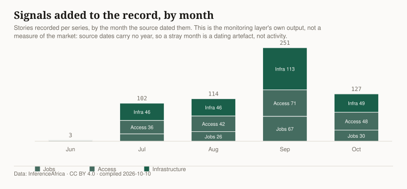

How the record is kept
One definition per metric, one source per row, statuses that are never mixed and gaps stated as numbers. This page is the contract behind every figure.
Completeness is not claimed. Rigour is.Why this record exists
Artificial intelligence is reshaping economic life, and the conversation about it has been largely about governing the technology. That work matters and it has reached Africa: the African AI Governance Index covers 55 countries, the Africa AI Readiness Index ranks countries, and the African Observatory on Responsible AI studies governance and ethics. Governance is one component. The economic record is the other, and it is thinner.
The impact is already visible in prices and in work. Freelance writing work on Upwork fell 32% year on year in 2025 as clients shifted work to AI tools. AI demand is driving memory prices up, which in turn makes smartphones more expensive, so a phone bought in Lagos or Nairobi now carries part of the cost of the AI buildout. African governments are committing to the promise: Nigeria's NATEP programme targets 1 million digital jobs, Ghana has committed to 100,000 business process outsourcing jobs, and Rwanda is positioning itself as an ICT exporter, with the Cassava Technologies and NVIDIA partnership investing US$700 million around 12,000 processing chips.
The ambitions are real. The record of whether they are being met is not. That is the gap this record exists to close, and closing it means counting rather than asserting.
The three dimensions
Every register in this record belongs to one of three dimensions, and each is stated the same way on every page.
Jobs
How AI is changing employment, digital work and economic opportunity.
Access
Whether individuals and businesses can afford and reach AI technologies.
Infrastructure
Whether Africa has the computing, connectivity, electricity and data-centre capacity required to participate.
This record is built for researchers, policymakers, journalists and development institutions: people who need a number they can check rather than a headline they have to trust.
The jobs decision
Three different quantities measure how exposed African work is to AI. They are not interchangeable, they do not share an axis, and a country can rank differently on each. This record publishes all three and states which is which.
- Share of jobs exposed (the headline). A modelled estimate that about 20% of jobs in Sub-Saharan Africa are in high-exposure occupations, derived from the IMF's low-exposure estimate. One figure for the region, not for countries.
- Share of tasks exposed (Figure 1 on the Jobs page). The Global Automation Atlas measure, with tasks relabelled under each country's own conditions. Covers 36 African countries including all ten the record prices, and leads the page because it carries the widest coverage: Africa 24.6% against a global 41.4% across 124 measured countries.
- Employment-weighted exposure index (Figure 2). The Jagged Global Economy index, which weights occupational exposure by each country's employment structure. Covers 33 African countries, six of the ten priced here. Mauritius 0.289 is the highest and Burundi 0.144 the lowest; Africa's 0.211 sits below the 0.259 average across the 140 countries measured.
A country's rank on one of these is not evidence about its rank on another. The index is not a percentage of jobs, the task share is not a share of employment, and nothing here sums them. The four countries absent from the index (Nigeria, South Africa, Morocco and Senegal) are covered by the task share, and the page says so rather than leaving a hole.
Data quality
Produced by the validator that gates every publish. If it fails, the record files still commit but the site is deliberately left alone.
| Register | Rows | Headline eligible | Quarantined | No archive |
|---|---|---|---|---|
| affordability.csv | 702 | 12 | 690 | 0 |
| availability-register.csv | 60 | 58 | 2 | 0 |
| component-costs | 1 | 0 | 1 | 0 |
| device-policy | 1 | 0 | 1 | 0 |
| device-prices | 6 | 1 | 5 | 1 |
| device-shipments | 5 | 1 | 4 | 0 |
| free-tier-register.csv | 29 | 25 | 4 | 4 |
| fx-decomposition.csv | 130 | 12 | 118 | 0 |
| infra-capacity.csv | 4 | 2 | 2 | 0 |
| infrastructure | 22 | 0 | 22 | 3 |
| jobs-atlas-exposure.csv | 36 | 0 | 36 | 0 |
| jobs-exposure.csv | 33 | 0 | 33 | 0 |
| model-price-events | 5 | 2 | 3 | 0 |
| model-prices | 13 | 3 | 10 | 0 |
| subscription-register.csv | 290 | 250 | 40 | 40 |
A quarantined row is not hidden. It is published with its source and its status, and it is excluded from headline figures because its evidence does not meet the rule for the row type. The rules are on this page; the counts are above.
Figure 1Signals added to the record, by month
Stories recorded per series. This is the monitoring layer's own output, not a measure of the market


Added daily · counts from the live record

Data table — the values plotted above
| Month 2026 | Jobs | Access | Infrastructure | Total |
|---|---|---|---|---|
| Jun | 0 | 2 | 1 | 3 |
| Jul | 20 | 36 | 46 | 102 |
| Aug | 26 | 42 | 46 | 114 |
| Sep | 67 | 71 | 113 | 251 |
| Oct | 10 | 25 | 22 | 57 |
What this record is
A single place where AI's economic effect on Africa is recorded with its source, its status and the date it last moved. Three series, each with a defined unit: infrastructure, access and jobs. Every row can be traced to a named source, and every chart can be downloaded as a file and cited.
What a row is
A row is a fact, not a story: a facility with a capacity figure and a status, a model with a price and a capability score, a device market with a measured change. Headlines are recorded separately as signals and never mixed into the registers.
Rigour, not completeness
Completeness cannot be guaranteed on a continent where much capacity is privately built and undisclosed. What is guaranteed is a published definition per metric, a source per row, statuses that are never mixed, gaps stated as numbers, and a null that stays null rather than becoming an estimate.
What the status treatments mean
Five treatments, applied identically on every surface: chip, table row and chart mark. Status is never carried by colour alone; every chip prints its label, and chart marks pair colour with a fill pattern.
- measured observed, in service, actual
- announced committed or named, not yet real
- forecast a third party's projection
- proposal proposed policy, not enacted
- derived computed by us from other rows
- modelled a third party's modelled estimate of a state: computed from published inputs
Printing in greyscale: measured is solid, announced is outlined at reduced weight, forecast is dashed with no fill, proposal is hatched, derived carries a function glyph.
Capability index: a named dependency
Every capability score in this record comes from one third party, the Artificial Analysis Intelligence Index. That index was restated in September 2026, which made previously published scores non-comparable with new ones. This record responded by restating every priced model to the current basis, retaining the prior value per row and logging each change in capability-restatement-log.json.
What happens if it changes again: the restatement process runs again, prior values are retained again, and no two bases are ever plotted on one axis. What happens if it disappears: the capability axis becomes undrawable, and the register falls back to price alone, with the loss stated here rather than a substitute score being invented. No second independent capability reference is carried yet; that is a known gap.
Status: two orthogonal fields
A row is an evidence status and a temporal status, never one blended label. The cross-tab covers 48 rows in the model-prices, infrastructure, device-prices, device-shipments, device-policy and component-costs JSON registers. It excludes CSV registers and model-price events; the full release count appears under Validated at build time. Derived is an evidence status and modelled is a temporal status, both within this same two-field system. A status pair may qualify for a headline only when the row also passes source-quality and other validation rules.
| Evidence status | Temporal status | Rows | Headline |
|---|---|---|---|
| trade reporting | measured | 19 | never headlines |
| trade reporting | announced | 7 | never headlines |
| industry body | measured | 4 | may headline |
| unclear | measured | 4 | never headlines |
| company filing | announced | 3 | never headlines |
| unclear | announced | 3 | never headlines |
| trade reporting | forecast | 2 | never headlines |
| industry body | forecast | 1 | never headlines |
| industry body | projection | 1 | never headlines |
| official | measured | 1 | may headline |
| official | proposal | 1 | never headlines |
| trade reporting | projection | 1 | never headlines |
| trade reporting | proposal | 1 | never headlines |
Source tiers
Every row carries the tier of its evidence. Where a trade report is the only source for a field, the field is marked unverified and excluded from headline series.
| Tier | Examples | Used for |
|---|---|---|
| Primary filing | Planning registers, grid connection records, regulator notices | Capacity, consent, energisation |
| Company filing | Results presentations, operator press releases | Capacity, commissioning dates, prices |
| Government communication | Ministry statements, national AI strategy documents | Targets, programmes, sovereign projects |
| Industry body | Association reports and market trackers | Cross-checks against our own count |
| Trade reporting | Specialist and general press | Signals, and fields marked unverified |
Coverage
What the record holds, against what is published about the same universe.
| Series | Rows | What it misses |
|---|---|---|
| Infrastructure | 22 | 16 rows without a published capacity; privately built facilities that are never announced; competing estimates put the continent at 223–230 facilities and 360 MW active |
| Access, models | 13 | African providers and locally hosted inference are not yet priced; launch-era capability scores are on an earlier scale |
| Access, devices | 13 | No country-level entry-tier device price; no index of our own construction |
| Jobs | 69 register rows (36 task-share + 33 employment-weighted); 129 separate monitoring signals | Register rows are observations from two different measures, not unique countries. Monitoring signals are a separate feed and are not added to register coverage. The validation table below lists the same two CSV registers. |
Country coverage and missing information
The country profiles cover all 54 African countries. “No information” means no country-level value or record appears in the stated dataset in this release; it is not zero and is not a claim that no source exists anywhere. Country totals below are computed from the published registers and the separate context snapshot.
| Measure | With information | No information | Scope and limitation |
|---|---|---|---|
| Jobs · task exposure | 36 of 54 | 18 | Published task-country summary; no country values are inferred. |
| Jobs · employment-weighted exposure | 33 of 54 | 21 | Separate model and denominator from the task-share measure. |
| Access · signup and payment evidence sample | 10 of 54 | 44 | Observed signup/payment sample; it does not define provider-wide supported regions. |
| Access · AI product support lists | 54 of 54 | 0 | Any one listed product-country pair; geographic listing only. |
| Access · Anthropic — Anthropic commercial API | 54 of 54 | 0 | Official supported-region list; not a test of signup, features, local payment, price, or uptime. |
| Access · Anthropic — Claude.ai web and mobile | 54 of 54 | 0 | Official supported-region list; not a test of signup, features, local payment, price, or uptime. |
| Access · Google — Gemini web app | 54 of 54 | 0 | Official supported-region list; not a test of signup, features, local payment, price, or uptime. |
| Access · Google — Google AI Studio and Gemini API | 54 of 54 | 0 | Official supported-region list; not a test of signup, features, local payment, price, or uptime. |
| Access · OpenAI — ChatGPT web and mobile | 54 of 54 | 0 | Official supported-region list; not a test of signup, features, local payment, price, or uptime. |
| Access · OpenAI — OpenAI API | 54 of 54 | 0 | Official supported-region list; not a test of signup, features, local payment, price, or uptime. |
| Access · AI-use basket against recent GNI per capita | 52 of 54 | 2 | World Bank observation within the five-calendar-year window; a national-average proxy, not household disposable income. |
| Access · minimum-wage comparison | 8 of 54 | 46 | Retains the declared ten-country wage and FX sample; missing inputs are not estimated. |
| Infrastructure · named projects | 9 of 54 | 45 | Named project records are not a complete facility census; shared and unallocated rows are not assigned to countries. |
| Infrastructure · country capacity values | 5 of 54 | 49 | A project without a published country-level capacity stays blank. |
| Context · Access to electricity (% of population) | 54 of 54 | 0 | Latest available annual observations; years 2024–2024. Not an AI-specific measure. |
| Context · Firms experiencing electrical outages (% of firms) | 52 of 54 | 2 | Latest available annual observations; years 2009–2025. Not an AI-specific measure. |
| Context · Value lost due to electrical outages (% of sales for affected firms) | 52 of 54 | 2 | Latest available annual observations; years 2009–2025. Not an AI-specific measure. |
| Context · Mobile cellular subscriptions (per 100 people) | 54 of 54 | 0 | Latest available annual observations; years 2022–2024. Not an AI-specific measure. |
| Context · Fixed broadband subscriptions (per 100 people) | 54 of 54 | 0 | Latest available annual observations; years 2021–2024. Not an AI-specific measure. |
| Context · Individuals using the Internet (% of population) | 54 of 54 | 0 | Latest available annual observations; years 2017–2024. Not an AI-specific measure. |
Why the Jobs gaps stay gaps
The Global Automation Atlas replication data publish country summaries for 36 African countries. A 2026 ILO working paper models a broader country sample, but does not publish a reusable table of country-level estimates. We therefore keep the two adopted measures separate and do not digitize chart points or substitute estimates from another method. Atlas data · ILO Working Paper 166.
Infrastructure country gaps
The African Data Centres Association's 2026 report estimates 220–230 facilities across 38 countries and gives continental active, under-construction and planned capacity. Those continent-wide values cannot be assigned to a specific country's profile without country-level facility and capacity evidence. This register therefore shows named projects and numeric MW only where a source identifies them; an unlisted country is not treated as having zero capacity. Read the ADCA 2026 report.
Context indicators are not AI outcomes
Internet use and broadband subscriptions describe general connectivity; household electricity access does not establish reliable power for a data centre. Firm outage measures are survey observations and their years vary. The values are kept outside the AI-specific indicator registry and cannot enter its headline figures. The CSV records each observation year, country-specific API query, originating dataset, and retrieval date. The World Bank API's MRNEV option returns the most recent non-empty observation; all values were retrieved from the API snapshot last updated 2026-07-13. Download the country context snapshot · World Bank API query guide · World Bank licensing.
Affordability and the exchange rate
Cost of intelligence as a share of income
workload_cost_usd / (gni_per_capita_atlas_usd / 12) x 100, where the workload is the record's frozen standard unit: 1,000,000 input tokens and 250,000 output tokens. The monthly basket is 20 x that unit, a defined unit standing in for roughly one moderate session per working day. It is an assumption, versioned, and not an estimate of real behaviour.
For country profiles, the median frontier rate card is also compared with monthly GNI per capita on the World Bank Atlas method for countries whose latest non-empty observation is within the current 5-calendar-year window (2021 or newer in this release). The source register preserves all 54 latest observations; Eritrea (2011) and South Sudan (2015) are shown as having no current comparison, not as zero or as current income. GNI per capita is a national average, not household disposable income or a typical worker's earnings. The Access heatmap retains the declared ten-country sample for legibility; the expanded country results are in each profile and the full affordability CSV. Download the GNI input snapshot · Read the full method and limits.
Minimum-wage hours
workload_cost_local / statutory_hourly_minimum_wage_local, where the local cost uses the official rate. Minimum wages are held in a hand-maintained table with a source and an effective date per country, because they change by decree and no clean API exists. Where a country has no single national rate, the cell stays null and the reason is recorded.
Atlas against spot
The income base is GNI per capita on the Atlas method, which smooths exchange rates over years. The minimum-wage calculation uses the spot rate on a stated date. They answer different questions and are never presented as variants of one number.
Official and parallel rates
Where a country has a materially different parallel rate, both are recorded and neither is blended. In Nigeria the two move in the same direction at different speeds, and that gap is itself a finding rather than something to average away.
The decomposition identity
ln(P_local_t / P_local_0) = ln(P_usd_t / P_usd_0) + ln(FX_t / FX_0). Logs are additive, so the rate-card component and the currency component sum exactly to the total. The base date is 2026-01-15 = 100. The build asserts the identity on every row and fails if it breaks. Where a model has one observation, its rate-card component is zero by absence of evidence, not by evidence of no change, and the row says so.
Worked example
Invariant: every derived metric must be reproducible from the published CSVs alone. This is that check, rendered from the files rather than typed by hand.
Worked example: Claude Fable 5.1 in NGA, computed from the published CSVs
| Step | Value |
|---|---|
| 1. Model | Claude Fable 5.1 (Anthropic), list rate 10.0 in / 50.0 out per million tokens |
| 2. Standard workload | 1,000,000 input + 250,000 output tokens, the record's frozen unit |
| 3. Workload cost | 1 x 10.0 + 0.25 x 50.0 = $22.5 |
| 4. GNI per capita, Atlas method | $1360.0 (2025) |
| 5. Monthly income | $1360.0 / 12 = $113.3333 |
| 6. Single workload as share of monthly income | $22.5 / $113.3333 x 100 = 19.8529% |
| 7. Monthly use basket | 20 x the workload = 397.0588% of monthly income |
| 8. Official rate at base | $22.5 x 1418.7844 NGN/USD = 31922.649 NGN |
| 9. Official rate now | $22.5 x 1330.7027 NGN/USD = 29940.8108 NGN |
| 10. Decomposition | currency -6.40933 log-% + rate card 0.0 log-% = -6.40933 log-% (index 93.7917) |
| 11. Minimum-wage hours | 29940.8108 NGN / 403.92 per hour = 74.1256 hours; the basket is 1482.51 hours |
Every figure above can be reproduced from data/affordability.csv and data/fx-decomposition.csv. Formula versions: A-1.0 and B-1.0.
Model inclusion
The rule
A model enters the price register if, as at the compile date, it (a) has a list price published by the provider itself or by a named pricing aggregator we can link to, (b) scores at least 35 on the capability index on a stated basis, and (c) is reachable through an API from at least one covered country. The rule is applied mechanically; the excluded table below is the proof.
Included: 28 models
| Model | Input $/Mtok | Output $/Mtok | Capability | Basis |
|---|---|---|---|---|
| Claude Fable 5.1Anthropic | $10 | $50 | 53.4 | current |
| Claude Opus 5Anthropic | $5 | $25 | 50.8 | current |
| Claude Sonnet 5Anthropic | $2 | $10 | 38.2 | current |
| Claude Fable 5Anthropic | $10 | $50 | 49.6 | current |
| Claude Opus 4.8Anthropic | $5 | $25 | 41.8 | current |
| Claude Opus 4.7Anthropic | $5 | $25 | 40.7 | current |
| GPT-6 AstraOpenAI | $10 | $50 | 52.7 | current |
| GPT-5.6 SolOpenAI | $4 | $20 | 47.0 | current |
| GPT-5.6 TerraOpenAI | $2 | $12 | 42.1 | current |
| GPT-5.6 LunaOpenAI | $0.20 | $1.20 | 37.3 | current |
| Gemini 3.8 FlashGoogle | $0.75 | $3.75 | 40.9 | current |
| Gemini 3.7 FlashGoogle | $0.75 | $3.75 | 39.1 | current |
| Muse Spark 1.3Meta | $1.25 | $4.25 | 48.1 | current |
| Muse Spark 1.2Meta | $1.25 | $4.25 | 39.6 | current |
| Qwen3.8 MaxAlibaba | $2 | $6 | 45.4 | current |
| Qwen3.8 MaxAlibaba | $2 | $6 | 40.2 | current |
| Qwen3.8 2.4T A95BAlibaba | $2 | $6 | 39.9 | current |
| Qwen3.8-Flash-NextAlibaba | $0.15 | $0.47 | 39.8 | current |
| GLM-5.3Z AI | $1.4 | $4.4 | 44.8 | current |
| GLM-5.3-FlashZ AI | $0.15 | $0.5 | 41.8 | current |
| Kimi K3Moonshot AI | $3 | $15 | 43.6 | current |
| Grok 4.6xAI | $2 | $6 | 44.3 | current |
| Grok 4.5xAI | $2 | $6 | 38.8 | current |
| Step 5 PreviewStepFun | $1 | $2.7 | 43.7 | current |
| DeepSeek V4.1 FlashDeepSeek | $0.30 | $1.20 | 39.5 | current |
| DeepSeek V4 Pro 0813DeepSeek | $1.32 | $3.96 | 36.0 | current |
| Agnes 3.0 FlashSapiens AI | $0.05 | $0.15 | 35.5 | current |
| Agnes 2.5 Pro BetaSapiens AI | $0.10 | $0.30 | 35.2 | current |
Excluded: 1 models, with the reason
| Model | Exclusion reason |
|---|---|
| Claude Mythos 5.1Anthropic | no capability score on the index |
Validated at build time
The build fails if a trade-reporting row is marked headline eligible, if a source is a bare domain or a session container, if a derived figure is missing its inputs, or if the FX decomposition components do not sum to the total. These are the counts from this release.
| Register | Rows | Headline eligible | Quarantined | Sources to replace | No archive |
|---|---|---|---|---|---|
| model-prices | 13 | 3 | 10 | 0 | 0 |
| model-price-events | 5 | 2 | 3 | 0 | 0 |
| infrastructure | 22 | 0 | 22 | 0 | 3 |
| device-prices | 6 | 1 | 5 | 0 | 1 |
| device-shipments | 5 | 1 | 4 | 0 | 0 |
| device-policy | 1 | 0 | 1 | 0 | 0 |
| component-costs | 1 | 0 | 1 | 0 | 0 |
| affordability.csv | 702 | 12 | 690 | 0 | 0 |
| fx-decomposition.csv | 130 | 12 | 118 | 0 | 0 |
| subscription-register.csv | 290 | 250 | 40 | 10 | 40 |
| free-tier-register.csv | 29 | 25 | 4 | 1 | 4 |
| availability-register.csv | 60 | 58 | 2 | 0 | 0 |
| jobs-exposure.csv | 33 | 0 | 33 | 0 | 0 |
| jobs-atlas-exposure.csv | 36 | 0 | 36 | 0 | 0 |
| infra-capacity.csv | 4 | 2 | 2 | 0 | 0 |
Corrections and releases
Fields change as projects move. When a value changes, the change is logged with its date and source and the previous value is kept; nothing is silently overwritten. Corrections are published on the page where they apply and recorded in the release history. The record is compiled automatically each morning and released monthly, so a chart cited in September can be reproduced in December.
Licence
Charts and data are published under Creative Commons Attribution 4.0. Credit reads: InferenceAfrica. Commercial licensing for firms, including the underlying data and an API, is separate from this open publication.
Context indicators
Definitions, history and coverage
Coverage is countries with at least one observation, not current-year completeness. Every chart shows its observation years. These indicators do not increase the AI-specific headline counts or establish AI causation. Manufacturing value added as a share of GDP describes manufacturing activity; it is not factory utilisation. Productivity uses constant 2021 PPP dollars per employed person.
| Measure | Category | Countries | Observed years | Unit | Evidence | Definition and limits |
|---|---|---|---|---|---|---|
| Unemployment | Context indicators | 53/54 · 1 missing | 1991–2025 | % of labour force | modelled · tier 1 | Unemployment refers to the share of the labor force that is without work but available for and seeking employment. One current WDI vintage across all years. Historical values may be revised. Do not splice with older vintages; see the source definition for method changes. Source |
| Youth unemployment | Context indicators | 53/54 · 1 missing | 1991–2025 | % of labour force aged 15–24 | modelled · tier 1 | Youth unemployment refers to the share of the labor force ages 15-24 without work but available for and seeking employment. One current WDI vintage across all years. Historical values may be revised. Do not splice with older vintages; see the source definition for method changes. Source |
| Labour force participation | Context indicators | 53/54 · 1 missing | 1990–2025 | % of population aged 15+ | modelled · tier 1 | Labor force participation rate is the proportion of the population ages 15 and older that is economically active: all people who supply labor for the production of goods and services during a specified period. One current WDI vintage across all years. Historical values may be revised. Do not splice with older vintages; see the source definition for method changes. Source |
| GDP growth | Context indicators | 54/54 · 0 missing | 1961–2025 | annual % | reported · tier 1 | Gross domestic product is the total income earned through the production of goods and services in an economic territory during an accounting period. It can be measured in three different ways: using either the expenditure approach, the income approach, or the production approach. This indicator denotes the percentage change over each previous year of the constant price (base year 2015) series in United States dollars. One current WDI vintage across all years. Historical values may be revised. Do not splice with older vintages; see the source definition for method changes. Source |
| GDP per capita | Context indicators | 54/54 · 0 missing | 1960–2025 | current USD | reported · tier 1 | Gross domestic product is the total income earned through the production of goods and services in an economic territory during an accounting period. It can be measured in three different ways: using either the expenditure approach, the income approach, or the production approach. The core indicator has been divided by the general population to achieve a per capita estimate.This indicator is expressed in current prices, meaning no adjustment has been made to account for price changes over time. This indicator is expressed in United States dollars. One current WDI vintage across all years. Historical values may be revised. Do not splice with older vintages; see the source definition for method changes. Source |
| Consumer price inflation | Context indicators | 52/54 · 2 missing | 1960–2025 | annual % | reported · tier 1 | Inflation as measured by the consumer price index reflects the annual percentage change in the cost to the average consumer of acquiring a basket of goods and services that may be fixed or changed at specified intervals, such as yearly. One current WDI vintage across all years. Historical values may be revised. Do not splice with older vintages; see the source definition for method changes. Source |
| Access to electricity | Context indicators | 54/54 · 0 missing | 1990–2024 | % of population | reported · tier 1 | Access to electricity is the percentage of population with access to electricity. Electrification data are collected from industry, national surveys and international sources. One current WDI vintage across all years. Historical values may be revised. Do not splice with older vintages; see the source definition for method changes. Source |
| Internet use | Context indicators | 54/54 · 0 missing | 1990–2024 | % of population | reported · tier 1 | Internet users are individuals who have used the Internet (from any location) in the last 3 months. The Internet can be used via a computer, mobile phone, personal digital assistant, games machine, digital TV etc. One current WDI vintage across all years. Historical values may be revised. Do not splice with older vintages; see the source definition for method changes. Source |
| Manufacturing value added | Context indicators | 54/54 · 0 missing | 1960–2025 | % of GDP | reported · tier 1 | Manufacturing includes industries classified in ISIC (Rev. 3) major division C and is defined as the physical or chemical transformation of materials or components into new products. Value added is the contribution to the economy by a producer or an industry or an institutional sector, which is estimated by the total value of output produced and deducting the total value of intermediate consumption of goods and services used to produce that output. This indicator is expressed as a percentage of Gross Domestic Product (GDP) which is the total income earned through the production of goods and services in an economic territory during an accounting period. One current WDI vintage across all years. Historical values may be revised. Do not splice with older vintages; see the source definition for method changes. Source |
| Labour productivity | Context indicators | 51/54 · 3 missing | 1991–2025 | GDP per person employed, constant 2021 PPP $ | modelled · tier 1 | GDP per person employed is gross domestic product (GDP) divided by total employment in the economy. Purchasing power parity (PPP) GDP is GDP converted to 2021 constant international dollars using PPP rates. An international dollar has the same purchasing power over GDP that a U.S. dollar has in the United States. One current WDI vintage across all years. Historical values may be revised. Do not splice with older vintages; see the source definition for method changes. Source |
| Electricity generating capacity | Context indicators | 54/54 · 0 missing | 1980–2024 | MW | reported · tier 1 | Total electricity generating capacity reported by EIA (electricity product 2, capacity activity 7). Million kilowatts converted to MW by multiplying by 1,000. Capacity is potential power, not annual generation or electricity consumed. No inference of dependable capacity or power available to data centres. One EIA data vintage. Historical estimates may be revised; source flags retained. National boundaries and coverage may change. No interpolation. Source |
| Eskom Homelight 20A electricity rate | Context indicators | 1/54 · 53 missing | 2025–2026 | ZAR per kWh, VAT included | reported · tier 1 | Published flat active-energy charge for Eskom direct Homelight 20A customers in South Africa, VAT included. Cents per kWh divided by 100 to obtain ZAR/kWh. Not a national average, municipal resale, industrial tariff or modelled household bill. Applicable tariff years start on 1 April. Flat-rate structure introduced in April 2025. Earlier inclining-block prices are incompatible and not joined. No foreign-exchange conversion. Rate validity ends 31 March of the next year; subsequent tariff changes need a new source review. Source |
| Eskom Homelight 60A electricity rate | Context indicators | 1/54 · 53 missing | 2025–2026 | ZAR per kWh, VAT included | reported · tier 1 | Published flat active-energy charge for Eskom direct Homelight 60A customers in South Africa, VAT included. Cents per kWh divided by 100 to obtain ZAR/kWh. Not a national average, municipal resale, industrial tariff or modelled household bill. Applicable tariff years start on 1 April. Flat-rate structure introduced in April 2025. Earlier inclining-block prices are incompatible and not joined. No foreign-exchange conversion. Rate validity ends 31 March of the next year; subsequent tariff changes need a new source review. Source |
Raw API snapshots and their SHA-256 hashes are retained. A saved local snapshot is not a Wayback capture. Each exported point retains its canonical source, observation date, status and snapshot reference. One current WDI/EIA vintage is used; it may revise earlier values. See source metadata for national methodology and boundary changes. Tariff history starts with the 2025 flat-rate definition; the earlier block tariffs are not spliced.
History audit and research log · All dated context observations
No data-centre-to-generation ratio is published: project scope, IT versus facility power, delivery status and observation dates are not yet aligned.
Collection round · 2026-10-01
Evidence on use, work, costs and compute
This collection preserves each source’s population, period and definition. Estimates, survey responses, vacancies and provider claims remain separate. Coverage is incomplete.
AI use and adoption
Survey percentages describe respondents; telemetry estimates use a different denominator. The five-country employee sample has no country-level breakdown here.
AI use reported by online survey respondents — 2/54 records with information
Any AI tool or application, Q3. Online survey respondents aged 18+; not all residents, and not restricted to work use. Country sample approximately 1,000.
2025 fieldwork; use in preceding 12 months · survey · measured · Google / Ipsos Our Life With AI, 2025 fieldwork
Online non-probability survey, approximately 1,000 adults per country; fieldwork 22 September–10 October 2025. Self-reported use. Results describe the surveyed sample and must not be presented as a census of all residents.
Make a chart from this measure
| Scope | Value | Meaning and limits |
|---|---|---|
| Algeria | No information in this source | No information: country outside this survey’s African sample. |
| Angola | No information in this source | No information: country outside this survey’s African sample. |
| Benin | No information in this source | No information: country outside this survey’s African sample. |
| Botswana | No information in this source | No information: country outside this survey’s African sample. |
| Burkina Faso | No information in this source | No information: country outside this survey’s African sample. |
| Burundi | No information in this source | No information: country outside this survey’s African sample. |
| Cabo Verde | No information in this source | No information: country outside this survey’s African sample. |
| Cameroon | No information in this source | No information: country outside this survey’s African sample. |
| Central African Republic | No information in this source | No information: country outside this survey’s African sample. |
| Chad | No information in this source | No information: country outside this survey’s African sample. |
| Comoros | No information in this source | No information: country outside this survey’s African sample. |
| Côte d'Ivoire | No information in this source | No information: country outside this survey’s African sample. |
| Democratic Republic of the Congo | No information in this source | No information: country outside this survey’s African sample. |
| Djibouti | No information in this source | No information: country outside this survey’s African sample. |
| Egypt | No information in this source | No information: country outside this survey’s African sample. |
| Equatorial Guinea | No information in this source | No information: country outside this survey’s African sample. |
| Eritrea | No information in this source | No information: country outside this survey’s African sample. |
| Eswatini | No information in this source | No information: country outside this survey’s African sample. |
| Ethiopia | No information in this source | No information: country outside this survey’s African sample. |
| Gabon | No information in this source | No information: country outside this survey’s African sample. |
| Gambia | No information in this source | No information: country outside this survey’s African sample. |
| Ghana | No information in this source | No information: country outside this survey’s African sample. |
| Guinea | No information in this source | No information: country outside this survey’s African sample. |
| Guinea-Bissau | No information in this source | No information: country outside this survey’s African sample. |
| Kenya | No information in this source | No information: country outside this survey’s African sample. |
| Lesotho | No information in this source | No information: country outside this survey’s African sample. |
| Liberia | No information in this source | No information: country outside this survey’s African sample. |
| Libya | No information in this source | No information: country outside this survey’s African sample. |
| Madagascar | No information in this source | No information: country outside this survey’s African sample. |
| Malawi | No information in this source | No information: country outside this survey’s African sample. |
| Mali | No information in this source | No information: country outside this survey’s African sample. |
| Mauritania | No information in this source | No information: country outside this survey’s African sample. |
| Mauritius | No information in this source | No information: country outside this survey’s African sample. |
| Morocco | No information in this source | No information: country outside this survey’s African sample. |
| Mozambique | No information in this source | No information: country outside this survey’s African sample. |
| Namibia | No information in this source | No information: country outside this survey’s African sample. |
| Niger | No information in this source | No information: country outside this survey’s African sample. |
| Nigeria | 88 % of respondents | Any AI tool or application, Q3. Online survey respondents aged 18+; not all residents, and not restricted to work use. Country sample approximately 1,000. |
| Republic of the Congo | No information in this source | No information: country outside this survey’s African sample. |
| Rwanda | No information in this source | No information: country outside this survey’s African sample. |
| Senegal | No information in this source | No information: country outside this survey’s African sample. |
| Seychelles | No information in this source | No information: country outside this survey’s African sample. |
| Sierra Leone | No information in this source | No information: country outside this survey’s African sample. |
| Somalia | No information in this source | No information: country outside this survey’s African sample. |
| South Africa | 72 % of respondents | Any AI tool or application, Q3. Online survey respondents aged 18+; not all residents, and not restricted to work use. Country sample approximately 1,000. |
| South Sudan | No information in this source | No information: country outside this survey’s African sample. |
| Sudan | No information in this source | No information: country outside this survey’s African sample. |
| São Tomé and Príncipe | No information in this source | No information: country outside this survey’s African sample. |
| Tanzania | No information in this source | No information: country outside this survey’s African sample. |
| Togo | No information in this source | No information: country outside this survey’s African sample. |
| Tunisia | No information in this source | No information: country outside this survey’s African sample. |
| Uganda | No information in this source | No information: country outside this survey’s African sample. |
| Zambia | No information in this source | No information: country outside this survey’s African sample. |
| Zimbabwe | No information in this source | No information: country outside this survey’s African sample. |
Generative AI use reported by online survey respondents — 2/54 records with information
Generative AI tools or generation of images, video or audio, Q4. Same online survey and fieldwork as the all-AI measure; a different question.
2025 fieldwork; use in preceding 12 months · survey · measured · Google / Ipsos Our Life With AI, 2025 fieldwork
Online non-probability survey, approximately 1,000 adults per country; fieldwork 22 September–10 October 2025. Self-reported use. Results describe the surveyed sample and must not be presented as a census of all residents.
Make a chart from this measure
| Scope | Value | Meaning and limits |
|---|---|---|
| Algeria | No information in this source | No information: country outside this survey’s African sample. |
| Angola | No information in this source | No information: country outside this survey’s African sample. |
| Benin | No information in this source | No information: country outside this survey’s African sample. |
| Botswana | No information in this source | No information: country outside this survey’s African sample. |
| Burkina Faso | No information in this source | No information: country outside this survey’s African sample. |
| Burundi | No information in this source | No information: country outside this survey’s African sample. |
| Cabo Verde | No information in this source | No information: country outside this survey’s African sample. |
| Cameroon | No information in this source | No information: country outside this survey’s African sample. |
| Central African Republic | No information in this source | No information: country outside this survey’s African sample. |
| Chad | No information in this source | No information: country outside this survey’s African sample. |
| Comoros | No information in this source | No information: country outside this survey’s African sample. |
| Côte d'Ivoire | No information in this source | No information: country outside this survey’s African sample. |
| Democratic Republic of the Congo | No information in this source | No information: country outside this survey’s African sample. |
| Djibouti | No information in this source | No information: country outside this survey’s African sample. |
| Egypt | No information in this source | No information: country outside this survey’s African sample. |
| Equatorial Guinea | No information in this source | No information: country outside this survey’s African sample. |
| Eritrea | No information in this source | No information: country outside this survey’s African sample. |
| Eswatini | No information in this source | No information: country outside this survey’s African sample. |
| Ethiopia | No information in this source | No information: country outside this survey’s African sample. |
| Gabon | No information in this source | No information: country outside this survey’s African sample. |
| Gambia | No information in this source | No information: country outside this survey’s African sample. |
| Ghana | No information in this source | No information: country outside this survey’s African sample. |
| Guinea | No information in this source | No information: country outside this survey’s African sample. |
| Guinea-Bissau | No information in this source | No information: country outside this survey’s African sample. |
| Kenya | No information in this source | No information: country outside this survey’s African sample. |
| Lesotho | No information in this source | No information: country outside this survey’s African sample. |
| Liberia | No information in this source | No information: country outside this survey’s African sample. |
| Libya | No information in this source | No information: country outside this survey’s African sample. |
| Madagascar | No information in this source | No information: country outside this survey’s African sample. |
| Malawi | No information in this source | No information: country outside this survey’s African sample. |
| Mali | No information in this source | No information: country outside this survey’s African sample. |
| Mauritania | No information in this source | No information: country outside this survey’s African sample. |
| Mauritius | No information in this source | No information: country outside this survey’s African sample. |
| Morocco | No information in this source | No information: country outside this survey’s African sample. |
| Mozambique | No information in this source | No information: country outside this survey’s African sample. |
| Namibia | No information in this source | No information: country outside this survey’s African sample. |
| Niger | No information in this source | No information: country outside this survey’s African sample. |
| Nigeria | 84 % of respondents | Generative AI tools or generation of images, video or audio, Q4. Same online survey and fieldwork as the all-AI measure; a different question. |
| Republic of the Congo | No information in this source | No information: country outside this survey’s African sample. |
| Rwanda | No information in this source | No information: country outside this survey’s African sample. |
| Senegal | No information in this source | No information: country outside this survey’s African sample. |
| Seychelles | No information in this source | No information: country outside this survey’s African sample. |
| Sierra Leone | No information in this source | No information: country outside this survey’s African sample. |
| Somalia | No information in this source | No information: country outside this survey’s African sample. |
| South Africa | 70 % of respondents | Generative AI tools or generation of images, video or audio, Q4. Same online survey and fieldwork as the all-AI measure; a different question. |
| South Sudan | No information in this source | No information: country outside this survey’s African sample. |
| Sudan | No information in this source | No information: country outside this survey’s African sample. |
| São Tomé and Príncipe | No information in this source | No information: country outside this survey’s African sample. |
| Tanzania | No information in this source | No information: country outside this survey’s African sample. |
| Togo | No information in this source | No information: country outside this survey’s African sample. |
| Tunisia | No information in this source | No information: country outside this survey’s African sample. |
| Uganda | No information in this source | No information: country outside this survey’s African sample. |
| Zambia | No information in this source | No information: country outside this survey’s African sample. |
| Zimbabwe | No information in this source | No information: country outside this survey’s African sample. |
Estimated generative AI use — H1 2025 — 46/54 records with information
Generative-AI diffusion estimate adjusted from Microsoft telemetry for device/OS market share, internet penetration and population. Working-age denominator; not a direct population survey or a measure of workplace adoption. Appendix pp. 15–17.
H1 2025 · vendor_estimate · modelled · Microsoft AI Economy Institute, Global AI Adoption in 2025
Generative-AI diffusion estimate adjusted from Microsoft telemetry for device/OS market share, internet penetration and population. Working-age denominator; not a direct population survey or a measure of workplace adoption. Appendix pp. 15–17.
Make a chart from this measure
| Scope | Value | Meaning and limits |
|---|---|---|
| Algeria | 11.3 % of working-age population | Generative-AI diffusion estimate adjusted from Microsoft telemetry for device/OS market share, internet penetration and population. Working-age denominator; not a direct population survey or a measure of workplace adoption. Appendix pp. 15–17. |
| Angola | 8.9 % of working-age population | Generative-AI diffusion estimate adjusted from Microsoft telemetry for device/OS market share, internet penetration and population. Working-age denominator; not a direct population survey or a measure of workplace adoption. Appendix pp. 15–17. |
| Benin | 8.7 % of working-age population | Generative-AI diffusion estimate adjusted from Microsoft telemetry for device/OS market share, internet penetration and population. Working-age denominator; not a direct population survey or a measure of workplace adoption. Appendix pp. 15–17. |
| Botswana | 12.8 % of working-age population | Generative-AI diffusion estimate adjusted from Microsoft telemetry for device/OS market share, internet penetration and population. Working-age denominator; not a direct population survey or a measure of workplace adoption. Appendix pp. 15–17. |
| Burkina Faso | 8.7 % of working-age population | Generative-AI diffusion estimate adjusted from Microsoft telemetry for device/OS market share, internet penetration and population. Working-age denominator; not a direct population survey or a measure of workplace adoption. Appendix pp. 15–17. |
| Burundi | 6.4 % of working-age population | Generative-AI diffusion estimate adjusted from Microsoft telemetry for device/OS market share, internet penetration and population. Working-age denominator; not a direct population survey or a measure of workplace adoption. Appendix pp. 15–17. |
| Cabo Verde | No information in this source | No information: no country estimate in the reviewed appendix. |
| Cameroon | 7 % of working-age population | Generative-AI diffusion estimate adjusted from Microsoft telemetry for device/OS market share, internet penetration and population. Working-age denominator; not a direct population survey or a measure of workplace adoption. Appendix pp. 15–17. |
| Central African Republic | 7 % of working-age population | Generative-AI diffusion estimate adjusted from Microsoft telemetry for device/OS market share, internet penetration and population. Working-age denominator; not a direct population survey or a measure of workplace adoption. Appendix pp. 15–17. |
| Chad | 7 % of working-age population | Generative-AI diffusion estimate adjusted from Microsoft telemetry for device/OS market share, internet penetration and population. Working-age denominator; not a direct population survey or a measure of workplace adoption. Appendix pp. 15–17. |
| Comoros | No information in this source | No information: no country estimate in the reviewed appendix. |
| Côte d'Ivoire | 10.8 % of working-age population | Generative-AI diffusion estimate adjusted from Microsoft telemetry for device/OS market share, internet penetration and population. Working-age denominator; not a direct population survey or a measure of workplace adoption. Appendix pp. 15–17. |
| Democratic Republic of the Congo | 7 % of working-age population | Generative-AI diffusion estimate adjusted from Microsoft telemetry for device/OS market share, internet penetration and population. Working-age denominator; not a direct population survey or a measure of workplace adoption. Appendix pp. 15–17. |
| Djibouti | No information in this source | No information: no country estimate in the reviewed appendix. |
| Egypt | 12.5 % of working-age population | Generative-AI diffusion estimate adjusted from Microsoft telemetry for device/OS market share, internet penetration and population. Working-age denominator; not a direct population survey or a measure of workplace adoption. Appendix pp. 15–17. |
| Equatorial Guinea | No information in this source | No information: no country estimate in the reviewed appendix. |
| Eritrea | 6.4 % of working-age population | Generative-AI diffusion estimate adjusted from Microsoft telemetry for device/OS market share, internet penetration and population. Working-age denominator; not a direct population survey or a measure of workplace adoption. Appendix pp. 15–17. |
| Eswatini | No information in this source | No information: no country estimate in the reviewed appendix. |
| Ethiopia | 6.4 % of working-age population | Generative-AI diffusion estimate adjusted from Microsoft telemetry for device/OS market share, internet penetration and population. Working-age denominator; not a direct population survey or a measure of workplace adoption. Appendix pp. 15–17. |
| Gabon | 12.3 % of working-age population | Generative-AI diffusion estimate adjusted from Microsoft telemetry for device/OS market share, internet penetration and population. Working-age denominator; not a direct population survey or a measure of workplace adoption. Appendix pp. 15–17. |
| Gambia | 10.6 % of working-age population | Generative-AI diffusion estimate adjusted from Microsoft telemetry for device/OS market share, internet penetration and population. Working-age denominator; not a direct population survey or a measure of workplace adoption. Appendix pp. 15–17. |
| Ghana | 8.7 % of working-age population | Generative-AI diffusion estimate adjusted from Microsoft telemetry for device/OS market share, internet penetration and population. Working-age denominator; not a direct population survey or a measure of workplace adoption. Appendix pp. 15–17. |
| Guinea | 8.7 % of working-age population | Generative-AI diffusion estimate adjusted from Microsoft telemetry for device/OS market share, internet penetration and population. Working-age denominator; not a direct population survey or a measure of workplace adoption. Appendix pp. 15–17. |
| Guinea-Bissau | 8.7 % of working-age population | Generative-AI diffusion estimate adjusted from Microsoft telemetry for device/OS market share, internet penetration and population. Working-age denominator; not a direct population survey or a measure of workplace adoption. Appendix pp. 15–17. |
| Kenya | 7.8 % of working-age population | Generative-AI diffusion estimate adjusted from Microsoft telemetry for device/OS market share, internet penetration and population. Working-age denominator; not a direct population survey or a measure of workplace adoption. Appendix pp. 15–17. |
| Lesotho | 8.8 % of working-age population | Generative-AI diffusion estimate adjusted from Microsoft telemetry for device/OS market share, internet penetration and population. Working-age denominator; not a direct population survey or a measure of workplace adoption. Appendix pp. 15–17. |
| Liberia | 8.7 % of working-age population | Generative-AI diffusion estimate adjusted from Microsoft telemetry for device/OS market share, internet penetration and population. Working-age denominator; not a direct population survey or a measure of workplace adoption. Appendix pp. 15–17. |
| Libya | 12.7 % of working-age population | Generative-AI diffusion estimate adjusted from Microsoft telemetry for device/OS market share, internet penetration and population. Working-age denominator; not a direct population survey or a measure of workplace adoption. Appendix pp. 15–17. |
| Madagascar | 8.9 % of working-age population | Generative-AI diffusion estimate adjusted from Microsoft telemetry for device/OS market share, internet penetration and population. Working-age denominator; not a direct population survey or a measure of workplace adoption. Appendix pp. 15–17. |
| Malawi | 8.9 % of working-age population | Generative-AI diffusion estimate adjusted from Microsoft telemetry for device/OS market share, internet penetration and population. Working-age denominator; not a direct population survey or a measure of workplace adoption. Appendix pp. 15–17. |
| Mali | 8.7 % of working-age population | Generative-AI diffusion estimate adjusted from Microsoft telemetry for device/OS market share, internet penetration and population. Working-age denominator; not a direct population survey or a measure of workplace adoption. Appendix pp. 15–17. |
| Mauritania | 8.7 % of working-age population | Generative-AI diffusion estimate adjusted from Microsoft telemetry for device/OS market share, internet penetration and population. Working-age denominator; not a direct population survey or a measure of workplace adoption. Appendix pp. 15–17. |
| Mauritius | No information in this source | No information: no country estimate in the reviewed appendix. |
| Morocco | 10.5 % of working-age population | Generative-AI diffusion estimate adjusted from Microsoft telemetry for device/OS market share, internet penetration and population. Working-age denominator; not a direct population survey or a measure of workplace adoption. Appendix pp. 15–17. |
| Mozambique | 8.9 % of working-age population | Generative-AI diffusion estimate adjusted from Microsoft telemetry for device/OS market share, internet penetration and population. Working-age denominator; not a direct population survey or a measure of workplace adoption. Appendix pp. 15–17. |
| Namibia | 13 % of working-age population | Generative-AI diffusion estimate adjusted from Microsoft telemetry for device/OS market share, internet penetration and population. Working-age denominator; not a direct population survey or a measure of workplace adoption. Appendix pp. 15–17. |
| Niger | 8.7 % of working-age population | Generative-AI diffusion estimate adjusted from Microsoft telemetry for device/OS market share, internet penetration and population. Working-age denominator; not a direct population survey or a measure of workplace adoption. Appendix pp. 15–17. |
| Nigeria | 8.7 % of working-age population | Generative-AI diffusion estimate adjusted from Microsoft telemetry for device/OS market share, internet penetration and population. Working-age denominator; not a direct population survey or a measure of workplace adoption. Appendix pp. 15–17. |
| Republic of the Congo | 7 % of working-age population | Generative-AI diffusion estimate adjusted from Microsoft telemetry for device/OS market share, internet penetration and population. Working-age denominator; not a direct population survey or a measure of workplace adoption. Appendix pp. 15–17. |
| Rwanda | 6 % of working-age population | Generative-AI diffusion estimate adjusted from Microsoft telemetry for device/OS market share, internet penetration and population. Working-age denominator; not a direct population survey or a measure of workplace adoption. Appendix pp. 15–17. |
| Senegal | 12.4 % of working-age population | Generative-AI diffusion estimate adjusted from Microsoft telemetry for device/OS market share, internet penetration and population. Working-age denominator; not a direct population survey or a measure of workplace adoption. Appendix pp. 15–17. |
| Seychelles | No information in this source | No information: no country estimate in the reviewed appendix. |
| Sierra Leone | 8.7 % of working-age population | Generative-AI diffusion estimate adjusted from Microsoft telemetry for device/OS market share, internet penetration and population. Working-age denominator; not a direct population survey or a measure of workplace adoption. Appendix pp. 15–17. |
| Somalia | 6.4 % of working-age population | Generative-AI diffusion estimate adjusted from Microsoft telemetry for device/OS market share, internet penetration and population. Working-age denominator; not a direct population survey or a measure of workplace adoption. Appendix pp. 15–17. |
| South Africa | 19.3 % of working-age population | Generative-AI diffusion estimate adjusted from Microsoft telemetry for device/OS market share, internet penetration and population. Working-age denominator; not a direct population survey or a measure of workplace adoption. Appendix pp. 15–17. |
| South Sudan | 6.4 % of working-age population | Generative-AI diffusion estimate adjusted from Microsoft telemetry for device/OS market share, internet penetration and population. Working-age denominator; not a direct population survey or a measure of workplace adoption. Appendix pp. 15–17. |
| Sudan | 6.4 % of working-age population | Generative-AI diffusion estimate adjusted from Microsoft telemetry for device/OS market share, internet penetration and population. Working-age denominator; not a direct population survey or a measure of workplace adoption. Appendix pp. 15–17. |
| São Tomé and Príncipe | No information in this source | No information: no country estimate in the reviewed appendix. |
| Tanzania | 6.4 % of working-age population | Generative-AI diffusion estimate adjusted from Microsoft telemetry for device/OS market share, internet penetration and population. Working-age denominator; not a direct population survey or a measure of workplace adoption. Appendix pp. 15–17. |
| Togo | 8.7 % of working-age population | Generative-AI diffusion estimate adjusted from Microsoft telemetry for device/OS market share, internet penetration and population. Working-age denominator; not a direct population survey or a measure of workplace adoption. Appendix pp. 15–17. |
| Tunisia | 12.3 % of working-age population | Generative-AI diffusion estimate adjusted from Microsoft telemetry for device/OS market share, internet penetration and population. Working-age denominator; not a direct population survey or a measure of workplace adoption. Appendix pp. 15–17. |
| Uganda | 6.4 % of working-age population | Generative-AI diffusion estimate adjusted from Microsoft telemetry for device/OS market share, internet penetration and population. Working-age denominator; not a direct population survey or a measure of workplace adoption. Appendix pp. 15–17. |
| Zambia | 11.7 % of working-age population | Generative-AI diffusion estimate adjusted from Microsoft telemetry for device/OS market share, internet penetration and population. Working-age denominator; not a direct population survey or a measure of workplace adoption. Appendix pp. 15–17. |
| Zimbabwe | 6.9 % of working-age population | Generative-AI diffusion estimate adjusted from Microsoft telemetry for device/OS market share, internet penetration and population. Working-age denominator; not a direct population survey or a measure of workplace adoption. Appendix pp. 15–17. |
Estimated generative AI use — H2 2025 — 46/54 records with information
Generative-AI diffusion estimate adjusted from Microsoft telemetry for device/OS market share, internet penetration and population. Working-age denominator; not a direct population survey or a measure of workplace adoption. Appendix pp. 15–17.
H2 2025 · vendor_estimate · modelled · Microsoft AI Economy Institute, Global AI Adoption in 2025
Generative-AI diffusion estimate adjusted from Microsoft telemetry for device/OS market share, internet penetration and population. Working-age denominator; not a direct population survey or a measure of workplace adoption. Appendix pp. 15–17.
Make a chart from this measure
| Scope | Value | Meaning and limits |
|---|---|---|
| Algeria | 12 % of working-age population | Generative-AI diffusion estimate adjusted from Microsoft telemetry for device/OS market share, internet penetration and population. Working-age denominator; not a direct population survey or a measure of workplace adoption. Appendix pp. 15–17. |
| Angola | 9.7 % of working-age population | Generative-AI diffusion estimate adjusted from Microsoft telemetry for device/OS market share, internet penetration and population. Working-age denominator; not a direct population survey or a measure of workplace adoption. Appendix pp. 15–17. |
| Benin | 9.3 % of working-age population | Generative-AI diffusion estimate adjusted from Microsoft telemetry for device/OS market share, internet penetration and population. Working-age denominator; not a direct population survey or a measure of workplace adoption. Appendix pp. 15–17. |
| Botswana | 13.7 % of working-age population | Generative-AI diffusion estimate adjusted from Microsoft telemetry for device/OS market share, internet penetration and population. Working-age denominator; not a direct population survey or a measure of workplace adoption. Appendix pp. 15–17. |
| Burkina Faso | 9.3 % of working-age population | Generative-AI diffusion estimate adjusted from Microsoft telemetry for device/OS market share, internet penetration and population. Working-age denominator; not a direct population survey or a measure of workplace adoption. Appendix pp. 15–17. |
| Burundi | 6.8 % of working-age population | Generative-AI diffusion estimate adjusted from Microsoft telemetry for device/OS market share, internet penetration and population. Working-age denominator; not a direct population survey or a measure of workplace adoption. Appendix pp. 15–17. |
| Cabo Verde | No information in this source | No information: no country estimate in the reviewed appendix. |
| Cameroon | 7.8 % of working-age population | Generative-AI diffusion estimate adjusted from Microsoft telemetry for device/OS market share, internet penetration and population. Working-age denominator; not a direct population survey or a measure of workplace adoption. Appendix pp. 15–17. |
| Central African Republic | 7.8 % of working-age population | Generative-AI diffusion estimate adjusted from Microsoft telemetry for device/OS market share, internet penetration and population. Working-age denominator; not a direct population survey or a measure of workplace adoption. Appendix pp. 15–17. |
| Chad | 7.8 % of working-age population | Generative-AI diffusion estimate adjusted from Microsoft telemetry for device/OS market share, internet penetration and population. Working-age denominator; not a direct population survey or a measure of workplace adoption. Appendix pp. 15–17. |
| Comoros | No information in this source | No information: no country estimate in the reviewed appendix. |
| Côte d'Ivoire | 11.7 % of working-age population | Generative-AI diffusion estimate adjusted from Microsoft telemetry for device/OS market share, internet penetration and population. Working-age denominator; not a direct population survey or a measure of workplace adoption. Appendix pp. 15–17. |
| Democratic Republic of the Congo | 7.8 % of working-age population | Generative-AI diffusion estimate adjusted from Microsoft telemetry for device/OS market share, internet penetration and population. Working-age denominator; not a direct population survey or a measure of workplace adoption. Appendix pp. 15–17. |
| Djibouti | No information in this source | No information: no country estimate in the reviewed appendix. |
| Egypt | 13.4 % of working-age population | Generative-AI diffusion estimate adjusted from Microsoft telemetry for device/OS market share, internet penetration and population. Working-age denominator; not a direct population survey or a measure of workplace adoption. Appendix pp. 15–17. |
| Equatorial Guinea | No information in this source | No information: no country estimate in the reviewed appendix. |
| Eritrea | 6.8 % of working-age population | Generative-AI diffusion estimate adjusted from Microsoft telemetry for device/OS market share, internet penetration and population. Working-age denominator; not a direct population survey or a measure of workplace adoption. Appendix pp. 15–17. |
| Eswatini | No information in this source | No information: no country estimate in the reviewed appendix. |
| Ethiopia | 6.8 % of working-age population | Generative-AI diffusion estimate adjusted from Microsoft telemetry for device/OS market share, internet penetration and population. Working-age denominator; not a direct population survey or a measure of workplace adoption. Appendix pp. 15–17. |
| Gabon | 13.4 % of working-age population | Generative-AI diffusion estimate adjusted from Microsoft telemetry for device/OS market share, internet penetration and population. Working-age denominator; not a direct population survey or a measure of workplace adoption. Appendix pp. 15–17. |
| Gambia | 10.9 % of working-age population | Generative-AI diffusion estimate adjusted from Microsoft telemetry for device/OS market share, internet penetration and population. Working-age denominator; not a direct population survey or a measure of workplace adoption. Appendix pp. 15–17. |
| Ghana | 9.3 % of working-age population | Generative-AI diffusion estimate adjusted from Microsoft telemetry for device/OS market share, internet penetration and population. Working-age denominator; not a direct population survey or a measure of workplace adoption. Appendix pp. 15–17. |
| Guinea | 9.3 % of working-age population | Generative-AI diffusion estimate adjusted from Microsoft telemetry for device/OS market share, internet penetration and population. Working-age denominator; not a direct population survey or a measure of workplace adoption. Appendix pp. 15–17. |
| Guinea-Bissau | 9.3 % of working-age population | Generative-AI diffusion estimate adjusted from Microsoft telemetry for device/OS market share, internet penetration and population. Working-age denominator; not a direct population survey or a measure of workplace adoption. Appendix pp. 15–17. |
| Kenya | 8.1 % of working-age population | Generative-AI diffusion estimate adjusted from Microsoft telemetry for device/OS market share, internet penetration and population. Working-age denominator; not a direct population survey or a measure of workplace adoption. Appendix pp. 15–17. |
| Lesotho | 9.1 % of working-age population | Generative-AI diffusion estimate adjusted from Microsoft telemetry for device/OS market share, internet penetration and population. Working-age denominator; not a direct population survey or a measure of workplace adoption. Appendix pp. 15–17. |
| Liberia | 9.3 % of working-age population | Generative-AI diffusion estimate adjusted from Microsoft telemetry for device/OS market share, internet penetration and population. Working-age denominator; not a direct population survey or a measure of workplace adoption. Appendix pp. 15–17. |
| Libya | 13.7 % of working-age population | Generative-AI diffusion estimate adjusted from Microsoft telemetry for device/OS market share, internet penetration and population. Working-age denominator; not a direct population survey or a measure of workplace adoption. Appendix pp. 15–17. |
| Madagascar | 9.7 % of working-age population | Generative-AI diffusion estimate adjusted from Microsoft telemetry for device/OS market share, internet penetration and population. Working-age denominator; not a direct population survey or a measure of workplace adoption. Appendix pp. 15–17. |
| Malawi | 9.7 % of working-age population | Generative-AI diffusion estimate adjusted from Microsoft telemetry for device/OS market share, internet penetration and population. Working-age denominator; not a direct population survey or a measure of workplace adoption. Appendix pp. 15–17. |
| Mali | 9.3 % of working-age population | Generative-AI diffusion estimate adjusted from Microsoft telemetry for device/OS market share, internet penetration and population. Working-age denominator; not a direct population survey or a measure of workplace adoption. Appendix pp. 15–17. |
| Mauritania | 9.3 % of working-age population | Generative-AI diffusion estimate adjusted from Microsoft telemetry for device/OS market share, internet penetration and population. Working-age denominator; not a direct population survey or a measure of workplace adoption. Appendix pp. 15–17. |
| Mauritius | No information in this source | No information: no country estimate in the reviewed appendix. |
| Morocco | 10.9 % of working-age population | Generative-AI diffusion estimate adjusted from Microsoft telemetry for device/OS market share, internet penetration and population. Working-age denominator; not a direct population survey or a measure of workplace adoption. Appendix pp. 15–17. |
| Mozambique | 9.7 % of working-age population | Generative-AI diffusion estimate adjusted from Microsoft telemetry for device/OS market share, internet penetration and population. Working-age denominator; not a direct population survey or a measure of workplace adoption. Appendix pp. 15–17. |
| Namibia | 13.8 % of working-age population | Generative-AI diffusion estimate adjusted from Microsoft telemetry for device/OS market share, internet penetration and population. Working-age denominator; not a direct population survey or a measure of workplace adoption. Appendix pp. 15–17. |
| Niger | 9.3 % of working-age population | Generative-AI diffusion estimate adjusted from Microsoft telemetry for device/OS market share, internet penetration and population. Working-age denominator; not a direct population survey or a measure of workplace adoption. Appendix pp. 15–17. |
| Nigeria | 9.3 % of working-age population | Generative-AI diffusion estimate adjusted from Microsoft telemetry for device/OS market share, internet penetration and population. Working-age denominator; not a direct population survey or a measure of workplace adoption. Appendix pp. 15–17. |
| Republic of the Congo | 7.8 % of working-age population | Generative-AI diffusion estimate adjusted from Microsoft telemetry for device/OS market share, internet penetration and population. Working-age denominator; not a direct population survey or a measure of workplace adoption. Appendix pp. 15–17. |
| Rwanda | 6.3 % of working-age population | Generative-AI diffusion estimate adjusted from Microsoft telemetry for device/OS market share, internet penetration and population. Working-age denominator; not a direct population survey or a measure of workplace adoption. Appendix pp. 15–17. |
| Senegal | 12.9 % of working-age population | Generative-AI diffusion estimate adjusted from Microsoft telemetry for device/OS market share, internet penetration and population. Working-age denominator; not a direct population survey or a measure of workplace adoption. Appendix pp. 15–17. |
| Seychelles | No information in this source | No information: no country estimate in the reviewed appendix. |
| Sierra Leone | 9.3 % of working-age population | Generative-AI diffusion estimate adjusted from Microsoft telemetry for device/OS market share, internet penetration and population. Working-age denominator; not a direct population survey or a measure of workplace adoption. Appendix pp. 15–17. |
| Somalia | 6.8 % of working-age population | Generative-AI diffusion estimate adjusted from Microsoft telemetry for device/OS market share, internet penetration and population. Working-age denominator; not a direct population survey or a measure of workplace adoption. Appendix pp. 15–17. |
| South Africa | 21.1 % of working-age population | Generative-AI diffusion estimate adjusted from Microsoft telemetry for device/OS market share, internet penetration and population. Working-age denominator; not a direct population survey or a measure of workplace adoption. Appendix pp. 15–17. |
| South Sudan | 6.8 % of working-age population | Generative-AI diffusion estimate adjusted from Microsoft telemetry for device/OS market share, internet penetration and population. Working-age denominator; not a direct population survey or a measure of workplace adoption. Appendix pp. 15–17. |
| Sudan | 6.8 % of working-age population | Generative-AI diffusion estimate adjusted from Microsoft telemetry for device/OS market share, internet penetration and population. Working-age denominator; not a direct population survey or a measure of workplace adoption. Appendix pp. 15–17. |
| São Tomé and Príncipe | No information in this source | No information: no country estimate in the reviewed appendix. |
| Tanzania | 6.8 % of working-age population | Generative-AI diffusion estimate adjusted from Microsoft telemetry for device/OS market share, internet penetration and population. Working-age denominator; not a direct population survey or a measure of workplace adoption. Appendix pp. 15–17. |
| Togo | 9.3 % of working-age population | Generative-AI diffusion estimate adjusted from Microsoft telemetry for device/OS market share, internet penetration and population. Working-age denominator; not a direct population survey or a measure of workplace adoption. Appendix pp. 15–17. |
| Tunisia | 12.7 % of working-age population | Generative-AI diffusion estimate adjusted from Microsoft telemetry for device/OS market share, internet penetration and population. Working-age denominator; not a direct population survey or a measure of workplace adoption. Appendix pp. 15–17. |
| Uganda | 6.8 % of working-age population | Generative-AI diffusion estimate adjusted from Microsoft telemetry for device/OS market share, internet penetration and population. Working-age denominator; not a direct population survey or a measure of workplace adoption. Appendix pp. 15–17. |
| Zambia | 12.3 % of working-age population | Generative-AI diffusion estimate adjusted from Microsoft telemetry for device/OS market share, internet penetration and population. Working-age denominator; not a direct population survey or a measure of workplace adoption. Appendix pp. 15–17. |
| Zimbabwe | 7.6 % of working-age population | Generative-AI diffusion estimate adjusted from Microsoft telemetry for device/OS market share, internet penetration and population. Working-age denominator; not a direct population survey or a measure of workplace adoption. Appendix pp. 15–17. |
Employees reporting AI use at work — 1/1 records with information
Pooled responses from Algeria, Kenya, Morocco, Nigeria and South Africa; use in the past year. Not an Africa-wide or country-level rate.
2025 survey · survey · measured · PwC Africa Workforce Hopes and Fears Survey 2025
Pooled employee survey covering Algeria, Kenya, Morocco, Nigeria and South Africa. Not an Africa-wide population estimate and not assignable to individual countries. Survey programme reports 1,753 responses across the five countries.
Make a chart from this measure
| Scope | Value | Meaning and limits |
|---|---|---|
| Five-country employee sample | 64 % of surveyed employees | Pooled responses from Algeria, Kenya, Morocco, Nigeria and South Africa; use in the past year. Not an Africa-wide or country-level rate. |
Employees reporting daily generative AI use — 1/1 records with information
Daily generative AI use in the pooled five-country employee survey. Distinct frequency and tool definition from any AI use in the past year.
2025 survey · survey · measured · PwC Africa Workforce Hopes and Fears Survey 2025
Pooled employee survey covering Algeria, Kenya, Morocco, Nigeria and South Africa. Not an Africa-wide population estimate and not assignable to individual countries. Survey programme reports 1,753 responses across the five countries.
Make a chart from this measure
| Scope | Value | Meaning and limits |
|---|---|---|
| Five-country employee sample | 17 % of surveyed employees | Daily generative AI use in the pooled five-country employee survey. Distinct frequency and tool definition from any AI use in the past year. |
Employment outcomes and hiring demand
Vacancy advertisements indicate hiring demand. Comparable national wage, hiring and net-employment effects remain a research gap.
Growth in AI-related vacancies on Pnet — 1/54 records with information
Pnet report, page 7: year-on-year growth in AI-related advertisements. Platform scope includes international/remote listings. This is a demand signal; it does not measure hires, net employment, wages or a causal effect of AI.
H1 2025 versus H1 2024 · platform_records · measured · Pnet Job Market Trends, August 2025
Change in AI-related vacancies observed by Pnet. A vacancy is an advertisement, not a hire or net job creation. The report includes international and remote listings; it is not a census of domestic employment.
Make a chart from this measure
| Scope | Value | Meaning and limits |
|---|---|---|
| Algeria | No information in this source | No information: outside this platform report’s country scope. |
| Angola | No information in this source | No information: outside this platform report’s country scope. |
| Benin | No information in this source | No information: outside this platform report’s country scope. |
| Botswana | No information in this source | No information: outside this platform report’s country scope. |
| Burkina Faso | No information in this source | No information: outside this platform report’s country scope. |
| Burundi | No information in this source | No information: outside this platform report’s country scope. |
| Cabo Verde | No information in this source | No information: outside this platform report’s country scope. |
| Cameroon | No information in this source | No information: outside this platform report’s country scope. |
| Central African Republic | No information in this source | No information: outside this platform report’s country scope. |
| Chad | No information in this source | No information: outside this platform report’s country scope. |
| Comoros | No information in this source | No information: outside this platform report’s country scope. |
| Côte d'Ivoire | No information in this source | No information: outside this platform report’s country scope. |
| Democratic Republic of the Congo | No information in this source | No information: outside this platform report’s country scope. |
| Djibouti | No information in this source | No information: outside this platform report’s country scope. |
| Egypt | No information in this source | No information: outside this platform report’s country scope. |
| Equatorial Guinea | No information in this source | No information: outside this platform report’s country scope. |
| Eritrea | No information in this source | No information: outside this platform report’s country scope. |
| Eswatini | No information in this source | No information: outside this platform report’s country scope. |
| Ethiopia | No information in this source | No information: outside this platform report’s country scope. |
| Gabon | No information in this source | No information: outside this platform report’s country scope. |
| Gambia | No information in this source | No information: outside this platform report’s country scope. |
| Ghana | No information in this source | No information: outside this platform report’s country scope. |
| Guinea | No information in this source | No information: outside this platform report’s country scope. |
| Guinea-Bissau | No information in this source | No information: outside this platform report’s country scope. |
| Kenya | No information in this source | No information: outside this platform report’s country scope. |
| Lesotho | No information in this source | No information: outside this platform report’s country scope. |
| Liberia | No information in this source | No information: outside this platform report’s country scope. |
| Libya | No information in this source | No information: outside this platform report’s country scope. |
| Madagascar | No information in this source | No information: outside this platform report’s country scope. |
| Malawi | No information in this source | No information: outside this platform report’s country scope. |
| Mali | No information in this source | No information: outside this platform report’s country scope. |
| Mauritania | No information in this source | No information: outside this platform report’s country scope. |
| Mauritius | No information in this source | No information: outside this platform report’s country scope. |
| Morocco | No information in this source | No information: outside this platform report’s country scope. |
| Mozambique | No information in this source | No information: outside this platform report’s country scope. |
| Namibia | No information in this source | No information: outside this platform report’s country scope. |
| Niger | No information in this source | No information: outside this platform report’s country scope. |
| Nigeria | No information in this source | No information: outside this platform report’s country scope. |
| Republic of the Congo | No information in this source | No information: outside this platform report’s country scope. |
| Rwanda | No information in this source | No information: outside this platform report’s country scope. |
| Senegal | No information in this source | No information: outside this platform report’s country scope. |
| Seychelles | No information in this source | No information: outside this platform report’s country scope. |
| Sierra Leone | No information in this source | No information: outside this platform report’s country scope. |
| Somalia | No information in this source | No information: outside this platform report’s country scope. |
| South Africa | 77 % change | Pnet report, page 7: year-on-year growth in AI-related advertisements. Platform scope includes international/remote listings. This is a demand signal; it does not measure hires, net employment, wages or a causal effect of AI. |
| South Sudan | No information in this source | No information: outside this platform report’s country scope. |
| Sudan | No information in this source | No information: outside this platform report’s country scope. |
| São Tomé and Príncipe | No information in this source | No information: outside this platform report’s country scope. |
| Tanzania | No information in this source | No information: outside this platform report’s country scope. |
| Togo | No information in this source | No information: outside this platform report’s country scope. |
| Tunisia | No information in this source | No information: outside this platform report’s country scope. |
| Uganda | No information in this source | No information: outside this platform report’s country scope. |
| Zambia | No information in this source | No information: outside this platform report’s country scope. |
| Zimbabwe | No information in this source | No information: outside this platform report’s country scope. |
No statistically significant average business-performance effect in the reported entrepreneur experiment. This is not evidence of a zero effect or a national jobs outcome. Research source.
A career-guidance experiment was announced. The reviewed announcement supplies no completed employment-impact result. Research source.
Practical access costs
These are ITU’s 2025 observations, including the new 5 GB mobile basket. Local device prices and verified payment conditions remain to be collected.
Mobile data basket (5 GB minimum) — 51/54 records with information
ITU 2025 retail basket, selected under its representative-operator rules. At least 5 GB; actual allowance may be higher. Historical observation, not a current quote. The 5 GB mobile basket must not be spliced into the older 2 GB series. Connection charges and device costs are not added to this monthly figure.
2025 · official · measured · ITU ICT Price Baskets, December 2025 release
Retail basket prices collected under ITU rules; country prices are published in USD and as a share of monthly GNI per capita. Basket definitions changed in 2025.
Make a chart from this measure
| Scope | Value | Meaning and limits |
|---|---|---|
| Algeria | 2.23 USD per month | ITU 2025 retail basket, selected under its representative-operator rules. At least 5 GB; actual allowance may be higher. Historical observation, not a current quote. The 5 GB mobile basket must not be spliced into the older 2 GB series. Connection charges and device costs are not added to this monthly figure. Selected operator: Algérie Télécom Mobile "MOBILIS". Plan allowance: 5 GB. Tax rate as published: 19. |
| Angola | 5.48 USD per month | ITU 2025 retail basket, selected under its representative-operator rules. At least 5 GB; actual allowance may be higher. Historical observation, not a current quote. The 5 GB mobile basket must not be spliced into the older 2 GB series. Connection charges and device costs are not added to this monthly figure. Selected operator: Unitel. Plan allowance: 6 GB. Tax rate as published: 14. |
| Benin | 8.21 USD per month | ITU 2025 retail basket, selected under its representative-operator rules. At least 5 GB; actual allowance may be higher. Historical observation, not a current quote. The 5 GB mobile basket must not be spliced into the older 2 GB series. Connection charges and device costs are not added to this monthly figure. Selected operator: SPACETEL BENIN (MTN). Plan allowance: 5 GB. Tax rate as published: 18. |
| Botswana | 8.68 USD per month | ITU 2025 retail basket, selected under its representative-operator rules. At least 5 GB; actual allowance may be higher. Historical observation, not a current quote. The 5 GB mobile basket must not be spliced into the older 2 GB series. Connection charges and device costs are not added to this monthly figure. Selected operator: Mascom. Plan allowance: 6.5 GB. Tax rate as published: 14. |
| Burkina Faso | 6.74 USD per month | ITU 2025 retail basket, selected under its representative-operator rules. At least 5 GB; actual allowance may be higher. Historical observation, not a current quote. The 5 GB mobile basket must not be spliced into the older 2 GB series. Connection charges and device costs are not added to this monthly figure. Selected operator: ORANGE BURKINA FASO SA. Plan allowance: 8 GB. Tax rate as published: 18. |
| Burundi | 5.34 USD per month | ITU 2025 retail basket, selected under its representative-operator rules. At least 5 GB; actual allowance may be higher. Historical observation, not a current quote. The 5 GB mobile basket must not be spliced into the older 2 GB series. Connection charges and device costs are not added to this monthly figure. Selected operator: Econet Leo. Plan allowance: 5 GB. Tax rate as published: 18. |
| Cabo Verde | 6.67 USD per month | ITU 2025 retail basket, selected under its representative-operator rules. At least 5 GB; actual allowance may be higher. Historical observation, not a current quote. The 5 GB mobile basket must not be spliced into the older 2 GB series. Connection charges and device costs are not added to this monthly figure. Selected operator: CVTelecom. Plan allowance: 5 GB. Tax rate as published: 15. |
| Cameroon | 8.02 USD per month | ITU 2025 retail basket, selected under its representative-operator rules. At least 5 GB; actual allowance may be higher. Historical observation, not a current quote. The 5 GB mobile basket must not be spliced into the older 2 GB series. Connection charges and device costs are not added to this monthly figure. Selected operator: ORANGE Cameroun. Plan allowance: 5 GB. Tax rate as published: 2. |
| Central African Republic | 23.8 USD per month | ITU 2025 retail basket, selected under its representative-operator rules. At least 5 GB; actual allowance may be higher. Historical observation, not a current quote. The 5 GB mobile basket must not be spliced into the older 2 GB series. Connection charges and device costs are not added to this monthly figure. Selected operator: Orange. Plan allowance: 5.6 GB. Tax rate as published: 19. |
| Chad | 9.62 USD per month | ITU 2025 retail basket, selected under its representative-operator rules. At least 5 GB; actual allowance may be higher. Historical observation, not a current quote. The 5 GB mobile basket must not be spliced into the older 2 GB series. Connection charges and device costs are not added to this monthly figure. Selected operator: Airtel. Plan allowance: 6 GB. Tax rate as published: 18. |
| Comoros | 10.7 USD per month | ITU 2025 retail basket, selected under its representative-operator rules. At least 5 GB; actual allowance may be higher. Historical observation, not a current quote. The 5 GB mobile basket must not be spliced into the older 2 GB series. Connection charges and device costs are not added to this monthly figure. Selected operator: Comores Telecom. Plan allowance: 10 GB. Tax rate as published: 10. |
| Côte d'Ivoire | 6.42 USD per month | ITU 2025 retail basket, selected under its representative-operator rules. At least 5 GB; actual allowance may be higher. Historical observation, not a current quote. The 5 GB mobile basket must not be spliced into the older 2 GB series. Connection charges and device costs are not added to this monthly figure. Selected operator: Orange Cote d'Ivoire. Plan allowance: 12 GB. Tax rate as published: 18. |
| Democratic Republic of the Congo | 10 USD per month | ITU 2025 retail basket, selected under its representative-operator rules. At least 5 GB; actual allowance may be higher. Historical observation, not a current quote. The 5 GB mobile basket must not be spliced into the older 2 GB series. Connection charges and device costs are not added to this monthly figure. Selected operator: Vodacom. Plan allowance: 10 GB. Tax rate as published: 26. |
| Djibouti | 16.88 USD per month | ITU 2025 retail basket, selected under its representative-operator rules. At least 5 GB; actual allowance may be higher. Historical observation, not a current quote. The 5 GB mobile basket must not be spliced into the older 2 GB series. Connection charges and device costs are not added to this monthly figure. Selected operator: Djibouti Telecom. Plan allowance: 20 GB. Tax rate as published: 10. |
| Egypt | 2.97 USD per month | ITU 2025 retail basket, selected under its representative-operator rules. At least 5 GB; actual allowance may be higher. Historical observation, not a current quote. The 5 GB mobile basket must not be spliced into the older 2 GB series. Connection charges and device costs are not added to this monthly figure. Selected operator: Vodafone Egypt. Plan allowance: 6 GB. Tax rate as published: 42.86000061035156. |
| Equatorial Guinea | No information in this source | No information in the ITU 2025 basket cell; no prior year substituted. |
| Eritrea | No information in this source | No information in the ITU 2025 basket cell; no prior year substituted. |
| Eswatini | 13.51 USD per month | ITU 2025 retail basket, selected under its representative-operator rules. At least 5 GB; actual allowance may be higher. Historical observation, not a current quote. The 5 GB mobile basket must not be spliced into the older 2 GB series. Connection charges and device costs are not added to this monthly figure. Selected operator: MTN. Plan allowance: 7 GB. Tax rate as published: 15. |
| Ethiopia | 2.13 USD per month | ITU 2025 retail basket, selected under its representative-operator rules. At least 5 GB; actual allowance may be higher. Historical observation, not a current quote. The 5 GB mobile basket must not be spliced into the older 2 GB series. Connection charges and device costs are not added to this monthly figure. Selected operator: Ethio Telecom. Plan allowance: 5 GB. Tax rate as published: 20. |
| Gabon | 16.04 USD per month | ITU 2025 retail basket, selected under its representative-operator rules. At least 5 GB; actual allowance may be higher. Historical observation, not a current quote. The 5 GB mobile basket must not be spliced into the older 2 GB series. Connection charges and device costs are not added to this monthly figure. Selected operator: Gabon Telecom/Moov Africa (Maroc Telecom). Plan allowance: 7 GB. Tax rate as published: 18. |
| Gambia | 6.13 USD per month | ITU 2025 retail basket, selected under its representative-operator rules. At least 5 GB; actual allowance may be higher. Historical observation, not a current quote. The 5 GB mobile basket must not be spliced into the older 2 GB series. Connection charges and device costs are not added to this monthly figure. Selected operator: Africell. Plan allowance: 5 GB. Tax rate as published: 21.25. |
| Ghana | 5.5 USD per month | ITU 2025 retail basket, selected under its representative-operator rules. At least 5 GB; actual allowance may be higher. Historical observation, not a current quote. The 5 GB mobile basket must not be spliced into the older 2 GB series. Connection charges and device costs are not added to this monthly figure. Selected operator: MTN GHANA. Plan allowance: 5 GB. Tax rate as published: 26. |
| Guinea | 6.72 USD per month | ITU 2025 retail basket, selected under its representative-operator rules. At least 5 GB; actual allowance may be higher. Historical observation, not a current quote. The 5 GB mobile basket must not be spliced into the older 2 GB series. Connection charges and device costs are not added to this monthly figure. Selected operator: Orange Guinea. Plan allowance: 5 GB. Tax rate as published: 18. |
| Guinea-Bissau | 8.02 USD per month | ITU 2025 retail basket, selected under its representative-operator rules. At least 5 GB; actual allowance may be higher. Historical observation, not a current quote. The 5 GB mobile basket must not be spliced into the older 2 GB series. Connection charges and device costs are not added to this monthly figure. Selected operator: Orange (Sonatel). Plan allowance: 8 GB. Tax rate as published: 19. |
| Kenya | 7.73 USD per month | ITU 2025 retail basket, selected under its representative-operator rules. At least 5 GB; actual allowance may be higher. Historical observation, not a current quote. The 5 GB mobile basket must not be spliced into the older 2 GB series. Connection charges and device costs are not added to this monthly figure. Selected operator: Safaricom. Plan allowance: 5 GB. Tax rate as published: 31. |
| Lesotho | 8 USD per month | ITU 2025 retail basket, selected under its representative-operator rules. At least 5 GB; actual allowance may be higher. Historical observation, not a current quote. The 5 GB mobile basket must not be spliced into the older 2 GB series. Connection charges and device costs are not added to this monthly figure. Selected operator: Vodacom Lesotho. Plan allowance: 6 GB. Tax rate as published: 15. |
| Liberia | 8 USD per month | ITU 2025 retail basket, selected under its representative-operator rules. At least 5 GB; actual allowance may be higher. Historical observation, not a current quote. The 5 GB mobile basket must not be spliced into the older 2 GB series. Connection charges and device costs are not added to this monthly figure. Selected operator: Orange. Plan allowance: 7.2 GB. Tax rate as published: 15. |
| Libya | 2.04 USD per month | ITU 2025 retail basket, selected under its representative-operator rules. At least 5 GB; actual allowance may be higher. Historical observation, not a current quote. The 5 GB mobile basket must not be spliced into the older 2 GB series. Connection charges and device costs are not added to this monthly figure. Selected operator: Libyana. Plan allowance: 5 GB. Tax rate as published: 0. |
| Madagascar | 5.34 USD per month | ITU 2025 retail basket, selected under its representative-operator rules. At least 5 GB; actual allowance may be higher. Historical observation, not a current quote. The 5 GB mobile basket must not be spliced into the older 2 GB series. Connection charges and device costs are not added to this monthly figure. Selected operator: Yas Madagascar. Plan allowance: 5 GB. Tax rate as published: 20. |
| Malawi | 3.43 USD per month | ITU 2025 retail basket, selected under its representative-operator rules. At least 5 GB; actual allowance may be higher. Historical observation, not a current quote. The 5 GB mobile basket must not be spliced into the older 2 GB series. Connection charges and device costs are not added to this monthly figure. Selected operator: Airtel Malawi. Plan allowance: 10.4 GB. Tax rate as published: 26.5. |
| Mali | 8.02 USD per month | ITU 2025 retail basket, selected under its representative-operator rules. At least 5 GB; actual allowance may be higher. Historical observation, not a current quote. The 5 GB mobile basket must not be spliced into the older 2 GB series. Connection charges and device costs are not added to this monthly figure. Selected operator: Orange Mali. Plan allowance: 8 GB. Tax rate as published: 18. |
| Mauritania | 5.02 USD per month | ITU 2025 retail basket, selected under its representative-operator rules. At least 5 GB; actual allowance may be higher. Historical observation, not a current quote. The 5 GB mobile basket must not be spliced into the older 2 GB series. Connection charges and device costs are not added to this monthly figure. Selected operator: Mauritel. Plan allowance: 6 GB. Tax rate as published: 18. |
| Mauritius | 5.89 USD per month | ITU 2025 retail basket, selected under its representative-operator rules. At least 5 GB; actual allowance may be higher. Historical observation, not a current quote. The 5 GB mobile basket must not be spliced into the older 2 GB series. Connection charges and device costs are not added to this monthly figure. Selected operator: Cellplus Mobile Communications Ltd (my.t). Plan allowance: 200 GB. Tax rate as published: 15. |
| Morocco | 4.95 USD per month | ITU 2025 retail basket, selected under its representative-operator rules. At least 5 GB; actual allowance may be higher. Historical observation, not a current quote. The 5 GB mobile basket must not be spliced into the older 2 GB series. Connection charges and device costs are not added to this monthly figure. Selected operator: Orange. Plan allowance: 11 GB. Tax rate as published: 20. |
| Mozambique | 3.07 USD per month | ITU 2025 retail basket, selected under its representative-operator rules. At least 5 GB; actual allowance may be higher. Historical observation, not a current quote. The 5 GB mobile basket must not be spliced into the older 2 GB series. Connection charges and device costs are not added to this monthly figure. Selected operator: Vodacom Mozambique. Plan allowance: 5.8 GB. Tax rate as published: 16. |
| Namibia | 9.7 USD per month | ITU 2025 retail basket, selected under its representative-operator rules. At least 5 GB; actual allowance may be higher. Historical observation, not a current quote. The 5 GB mobile basket must not be spliced into the older 2 GB series. Connection charges and device costs are not added to this monthly figure. Selected operator: Mobile Telecommunications Company (MTC). Plan allowance: 8 GB. Tax rate as published: 15. |
| Niger | 8.02 USD per month | ITU 2025 retail basket, selected under its representative-operator rules. At least 5 GB; actual allowance may be higher. Historical observation, not a current quote. The 5 GB mobile basket must not be spliced into the older 2 GB series. Connection charges and device costs are not added to this monthly figure. Selected operator: Airtel Niger SA (Ex Celtel). Plan allowance: 5 GB. Tax rate as published: 19. |
| Nigeria | 0.99 USD per month | ITU 2025 retail basket, selected under its representative-operator rules. At least 5 GB; actual allowance may be higher. Historical observation, not a current quote. The 5 GB mobile basket must not be spliced into the older 2 GB series. Connection charges and device costs are not added to this monthly figure. Selected operator: MTN. Plan allowance: 5 GB. Tax rate as published: 7.5. |
| Republic of the Congo | 10.2 USD per month | ITU 2025 retail basket, selected under its representative-operator rules. At least 5 GB; actual allowance may be higher. Historical observation, not a current quote. The 5 GB mobile basket must not be spliced into the older 2 GB series. Connection charges and device costs are not added to this monthly figure. Selected operator: MTN. Plan allowance: 5.1 GB. Tax rate as published: 18.899999618530273. |
| Rwanda | 1.43 USD per month | ITU 2025 retail basket, selected under its representative-operator rules. At least 5 GB; actual allowance may be higher. Historical observation, not a current quote. The 5 GB mobile basket must not be spliced into the older 2 GB series. Connection charges and device costs are not added to this monthly figure. Selected operator: MTN Rwandacell Plc. Plan allowance: 15 GB. Tax rate as published: 28. |
| Senegal | 6.42 USD per month | ITU 2025 retail basket, selected under its representative-operator rules. At least 5 GB; actual allowance may be higher. Historical observation, not a current quote. The 5 GB mobile basket must not be spliced into the older 2 GB series. Connection charges and device costs are not added to this monthly figure. Selected operator: Orange. Plan allowance: 8 GB. Tax rate as published: 23. |
| Seychelles | 20.27 USD per month | ITU 2025 retail basket, selected under its representative-operator rules. At least 5 GB; actual allowance may be higher. Historical observation, not a current quote. The 5 GB mobile basket must not be spliced into the older 2 GB series. Connection charges and device costs are not added to this monthly figure. Selected operator: Cable and Wireless (Seychelles) Ltd. Plan allowance: 6.5 GB. Tax rate as published: 15. |
| Sierra Leone | 4.26 USD per month | ITU 2025 retail basket, selected under its representative-operator rules. At least 5 GB; actual allowance may be higher. Historical observation, not a current quote. The 5 GB mobile basket must not be spliced into the older 2 GB series. Connection charges and device costs are not added to this monthly figure. Selected operator: Africell. Plan allowance: 5 GB. Tax rate as published: 15. |
| Somalia | 2 USD per month | ITU 2025 retail basket, selected under its representative-operator rules. At least 5 GB; actual allowance may be higher. Historical observation, not a current quote. The 5 GB mobile basket must not be spliced into the older 2 GB series. Connection charges and device costs are not added to this monthly figure. Selected operator: Hormuud Telecom . Plan allowance: 5 GB. Tax rate as published: 5. |
| South Africa | 6.43 USD per month | ITU 2025 retail basket, selected under its representative-operator rules. At least 5 GB; actual allowance may be higher. Historical observation, not a current quote. The 5 GB mobile basket must not be spliced into the older 2 GB series. Connection charges and device costs are not added to this monthly figure. Selected operator: Vodacom SA. Plan allowance: 5 GB. Tax rate as published: 15. |
| South Sudan | 6.07 USD per month | ITU 2025 retail basket, selected under its representative-operator rules. At least 5 GB; actual allowance may be higher. Historical observation, not a current quote. The 5 GB mobile basket must not be spliced into the older 2 GB series. Connection charges and device costs are not added to this monthly figure. Selected operator: MTN. Plan allowance: 5 GB. Tax rate as published: 10. |
| Sudan | 4.17 USD per month | ITU 2025 retail basket, selected under its representative-operator rules. At least 5 GB; actual allowance may be higher. Historical observation, not a current quote. The 5 GB mobile basket must not be spliced into the older 2 GB series. Connection charges and device costs are not added to this monthly figure. Selected operator: Zain Sudan. Plan allowance: 10 GB. Tax rate as published: 30. |
| São Tomé and Príncipe | 11.75 USD per month | ITU 2025 retail basket, selected under its representative-operator rules. At least 5 GB; actual allowance may be higher. Historical observation, not a current quote. The 5 GB mobile basket must not be spliced into the older 2 GB series. Connection charges and device costs are not added to this monthly figure. Selected operator: CST. Plan allowance: 5 GB. Tax rate as published: 15. |
| Tanzania | 4.72 USD per month | ITU 2025 retail basket, selected under its representative-operator rules. At least 5 GB; actual allowance may be higher. Historical observation, not a current quote. The 5 GB mobile basket must not be spliced into the older 2 GB series. Connection charges and device costs are not added to this monthly figure. Selected operator: Vodacom Tanzania. Plan allowance: 5.6 GB. Tax rate as published: 18. |
| Togo | 8.02 USD per month | ITU 2025 retail basket, selected under its representative-operator rules. At least 5 GB; actual allowance may be higher. Historical observation, not a current quote. The 5 GB mobile basket must not be spliced into the older 2 GB series. Connection charges and device costs are not added to this monthly figure. Selected operator: Togo Cellulaire. Plan allowance: 6 GB. Tax rate as published: 18. |
| Tunisia | 4.74 USD per month | ITU 2025 retail basket, selected under its representative-operator rules. At least 5 GB; actual allowance may be higher. Historical observation, not a current quote. The 5 GB mobile basket must not be spliced into the older 2 GB series. Connection charges and device costs are not added to this monthly figure. Selected operator: Ooredoo. Plan allowance: 6 GB. Tax rate as published: 19. |
| Uganda | 5.44 USD per month | ITU 2025 retail basket, selected under its representative-operator rules. At least 5 GB; actual allowance may be higher. Historical observation, not a current quote. The 5 GB mobile basket must not be spliced into the older 2 GB series. Connection charges and device costs are not added to this monthly figure. Selected operator: MTN Uganda. Plan allowance: 7.5 GB. Tax rate as published: 30. |
| Zambia | 2.83 USD per month | ITU 2025 retail basket, selected under its representative-operator rules. At least 5 GB; actual allowance may be higher. Historical observation, not a current quote. The 5 GB mobile basket must not be spliced into the older 2 GB series. Connection charges and device costs are not added to this monthly figure. Selected operator: Airtel. Plan allowance: 6 GB. Tax rate as published: 33.5. |
| Zimbabwe | No information in this source | No information in the ITU 2025 basket cell; no prior year substituted. Selected operator: ECONET. Plan allowance: 5.6 GB. Tax rate as published: 25. |
Mobile data basket / monthly income — 51/54 records with information
ITU 2025 retail basket, selected under its representative-operator rules. At least 5 GB; actual allowance may be higher. Historical observation, not a current quote. The 5 GB mobile basket must not be spliced into the older 2 GB series. Income ratio uses ITU’s own GNI denominator and release, which can differ from this Observatory’s AI-price income base.
2025 · official · measured · ITU ICT Price Baskets, December 2025 release
Retail basket prices collected under ITU rules; country prices are published in USD and as a share of monthly GNI per capita. Basket definitions changed in 2025.
Make a chart from this measure
| Scope | Value | Meaning and limits |
|---|---|---|
| Algeria | 0.49 % of monthly GNI per capita | ITU 2025 retail basket, selected under its representative-operator rules. At least 5 GB; actual allowance may be higher. Historical observation, not a current quote. The 5 GB mobile basket must not be spliced into the older 2 GB series. Income ratio uses ITU’s own GNI denominator and release, which can differ from this Observatory’s AI-price income base. Selected operator: Algérie Télécom Mobile "MOBILIS". Plan allowance: 5 GB. Tax rate as published: 19. |
| Angola | 3.05 % of monthly GNI per capita | ITU 2025 retail basket, selected under its representative-operator rules. At least 5 GB; actual allowance may be higher. Historical observation, not a current quote. The 5 GB mobile basket must not be spliced into the older 2 GB series. Income ratio uses ITU’s own GNI denominator and release, which can differ from this Observatory’s AI-price income base. Selected operator: Unitel. Plan allowance: 6 GB. Tax rate as published: 14. |
| Benin | 6.89 % of monthly GNI per capita | ITU 2025 retail basket, selected under its representative-operator rules. At least 5 GB; actual allowance may be higher. Historical observation, not a current quote. The 5 GB mobile basket must not be spliced into the older 2 GB series. Income ratio uses ITU’s own GNI denominator and release, which can differ from this Observatory’s AI-price income base. Selected operator: SPACETEL BENIN (MTN). Plan allowance: 5 GB. Tax rate as published: 18. |
| Botswana | 1.38 % of monthly GNI per capita | ITU 2025 retail basket, selected under its representative-operator rules. At least 5 GB; actual allowance may be higher. Historical observation, not a current quote. The 5 GB mobile basket must not be spliced into the older 2 GB series. Income ratio uses ITU’s own GNI denominator and release, which can differ from this Observatory’s AI-price income base. Selected operator: Mascom. Plan allowance: 6.5 GB. Tax rate as published: 14. |
| Burkina Faso | 8.8 % of monthly GNI per capita | ITU 2025 retail basket, selected under its representative-operator rules. At least 5 GB; actual allowance may be higher. Historical observation, not a current quote. The 5 GB mobile basket must not be spliced into the older 2 GB series. Income ratio uses ITU’s own GNI denominator and release, which can differ from this Observatory’s AI-price income base. Selected operator: ORANGE BURKINA FASO SA. Plan allowance: 8 GB. Tax rate as published: 18. |
| Burundi | 25.18 % of monthly GNI per capita | ITU 2025 retail basket, selected under its representative-operator rules. At least 5 GB; actual allowance may be higher. Historical observation, not a current quote. The 5 GB mobile basket must not be spliced into the older 2 GB series. Income ratio uses ITU’s own GNI denominator and release, which can differ from this Observatory’s AI-price income base. Selected operator: Econet Leo. Plan allowance: 5 GB. Tax rate as published: 18. |
| Cabo Verde | 1.59 % of monthly GNI per capita | ITU 2025 retail basket, selected under its representative-operator rules. At least 5 GB; actual allowance may be higher. Historical observation, not a current quote. The 5 GB mobile basket must not be spliced into the older 2 GB series. Income ratio uses ITU’s own GNI denominator and release, which can differ from this Observatory’s AI-price income base. Selected operator: CVTelecom. Plan allowance: 5 GB. Tax rate as published: 15. |
| Cameroon | 5.72 % of monthly GNI per capita | ITU 2025 retail basket, selected under its representative-operator rules. At least 5 GB; actual allowance may be higher. Historical observation, not a current quote. The 5 GB mobile basket must not be spliced into the older 2 GB series. Income ratio uses ITU’s own GNI denominator and release, which can differ from this Observatory’s AI-price income base. Selected operator: ORANGE Cameroun. Plan allowance: 5 GB. Tax rate as published: 2. |
| Central African Republic | 53.67 % of monthly GNI per capita | ITU 2025 retail basket, selected under its representative-operator rules. At least 5 GB; actual allowance may be higher. Historical observation, not a current quote. The 5 GB mobile basket must not be spliced into the older 2 GB series. Income ratio uses ITU’s own GNI denominator and release, which can differ from this Observatory’s AI-price income base. Selected operator: Orange. Plan allowance: 5.6 GB. Tax rate as published: 19. |
| Chad | 11.81 % of monthly GNI per capita | ITU 2025 retail basket, selected under its representative-operator rules. At least 5 GB; actual allowance may be higher. Historical observation, not a current quote. The 5 GB mobile basket must not be spliced into the older 2 GB series. Income ratio uses ITU’s own GNI denominator and release, which can differ from this Observatory’s AI-price income base. Selected operator: Airtel. Plan allowance: 6 GB. Tax rate as published: 18. |
| Comoros | 7.36 % of monthly GNI per capita | ITU 2025 retail basket, selected under its representative-operator rules. At least 5 GB; actual allowance may be higher. Historical observation, not a current quote. The 5 GB mobile basket must not be spliced into the older 2 GB series. Income ratio uses ITU’s own GNI denominator and release, which can differ from this Observatory’s AI-price income base. Selected operator: Comores Telecom. Plan allowance: 10 GB. Tax rate as published: 10. |
| Côte d'Ivoire | 3.04 % of monthly GNI per capita | ITU 2025 retail basket, selected under its representative-operator rules. At least 5 GB; actual allowance may be higher. Historical observation, not a current quote. The 5 GB mobile basket must not be spliced into the older 2 GB series. Income ratio uses ITU’s own GNI denominator and release, which can differ from this Observatory’s AI-price income base. Selected operator: Orange Cote d'Ivoire. Plan allowance: 12 GB. Tax rate as published: 18. |
| Democratic Republic of the Congo | 18.75 % of monthly GNI per capita | ITU 2025 retail basket, selected under its representative-operator rules. At least 5 GB; actual allowance may be higher. Historical observation, not a current quote. The 5 GB mobile basket must not be spliced into the older 2 GB series. Income ratio uses ITU’s own GNI denominator and release, which can differ from this Observatory’s AI-price income base. Selected operator: Vodacom. Plan allowance: 10 GB. Tax rate as published: 26. |
| Djibouti | 5.74 % of monthly GNI per capita | ITU 2025 retail basket, selected under its representative-operator rules. At least 5 GB; actual allowance may be higher. Historical observation, not a current quote. The 5 GB mobile basket must not be spliced into the older 2 GB series. Income ratio uses ITU’s own GNI denominator and release, which can differ from this Observatory’s AI-price income base. Selected operator: Djibouti Telecom. Plan allowance: 20 GB. Tax rate as published: 10. |
| Egypt | 1.58 % of monthly GNI per capita | ITU 2025 retail basket, selected under its representative-operator rules. At least 5 GB; actual allowance may be higher. Historical observation, not a current quote. The 5 GB mobile basket must not be spliced into the older 2 GB series. Income ratio uses ITU’s own GNI denominator and release, which can differ from this Observatory’s AI-price income base. Selected operator: Vodafone Egypt. Plan allowance: 6 GB. Tax rate as published: 42.86000061035156. |
| Equatorial Guinea | No information in this source | No information in the ITU 2025 basket cell; no prior year substituted. |
| Eritrea | No information in this source | No information in the ITU 2025 basket cell; no prior year substituted. |
| Eswatini | 4.56 % of monthly GNI per capita | ITU 2025 retail basket, selected under its representative-operator rules. At least 5 GB; actual allowance may be higher. Historical observation, not a current quote. The 5 GB mobile basket must not be spliced into the older 2 GB series. Income ratio uses ITU’s own GNI denominator and release, which can differ from this Observatory’s AI-price income base. Selected operator: MTN. Plan allowance: 7 GB. Tax rate as published: 15. |
| Ethiopia | 4.79 % of monthly GNI per capita | ITU 2025 retail basket, selected under its representative-operator rules. At least 5 GB; actual allowance may be higher. Historical observation, not a current quote. The 5 GB mobile basket must not be spliced into the older 2 GB series. Income ratio uses ITU’s own GNI denominator and release, which can differ from this Observatory’s AI-price income base. Selected operator: Ethio Telecom. Plan allowance: 5 GB. Tax rate as published: 20. |
| Gabon | 2.65 % of monthly GNI per capita | ITU 2025 retail basket, selected under its representative-operator rules. At least 5 GB; actual allowance may be higher. Historical observation, not a current quote. The 5 GB mobile basket must not be spliced into the older 2 GB series. Income ratio uses ITU’s own GNI denominator and release, which can differ from this Observatory’s AI-price income base. Selected operator: Gabon Telecom/Moov Africa (Maroc Telecom). Plan allowance: 7 GB. Tax rate as published: 18. |
| Gambia | 8.68 % of monthly GNI per capita | ITU 2025 retail basket, selected under its representative-operator rules. At least 5 GB; actual allowance may be higher. Historical observation, not a current quote. The 5 GB mobile basket must not be spliced into the older 2 GB series. Income ratio uses ITU’s own GNI denominator and release, which can differ from this Observatory’s AI-price income base. Selected operator: Africell. Plan allowance: 5 GB. Tax rate as published: 21.25. |
| Ghana | 3.06 % of monthly GNI per capita | ITU 2025 retail basket, selected under its representative-operator rules. At least 5 GB; actual allowance may be higher. Historical observation, not a current quote. The 5 GB mobile basket must not be spliced into the older 2 GB series. Income ratio uses ITU’s own GNI denominator and release, which can differ from this Observatory’s AI-price income base. Selected operator: MTN GHANA. Plan allowance: 5 GB. Tax rate as published: 26. |
| Guinea | 5.16 % of monthly GNI per capita | ITU 2025 retail basket, selected under its representative-operator rules. At least 5 GB; actual allowance may be higher. Historical observation, not a current quote. The 5 GB mobile basket must not be spliced into the older 2 GB series. Income ratio uses ITU’s own GNI denominator and release, which can differ from this Observatory’s AI-price income base. Selected operator: Orange Guinea. Plan allowance: 5 GB. Tax rate as published: 18. |
| Guinea-Bissau | 10.2 % of monthly GNI per capita | ITU 2025 retail basket, selected under its representative-operator rules. At least 5 GB; actual allowance may be higher. Historical observation, not a current quote. The 5 GB mobile basket must not be spliced into the older 2 GB series. Income ratio uses ITU’s own GNI denominator and release, which can differ from this Observatory’s AI-price income base. Selected operator: Orange (Sonatel). Plan allowance: 8 GB. Tax rate as published: 19. |
| Kenya | 4.1 % of monthly GNI per capita | ITU 2025 retail basket, selected under its representative-operator rules. At least 5 GB; actual allowance may be higher. Historical observation, not a current quote. The 5 GB mobile basket must not be spliced into the older 2 GB series. Income ratio uses ITU’s own GNI denominator and release, which can differ from this Observatory’s AI-price income base. Selected operator: Safaricom. Plan allowance: 5 GB. Tax rate as published: 31. |
| Lesotho | 8.35 % of monthly GNI per capita | ITU 2025 retail basket, selected under its representative-operator rules. At least 5 GB; actual allowance may be higher. Historical observation, not a current quote. The 5 GB mobile basket must not be spliced into the older 2 GB series. Income ratio uses ITU’s own GNI denominator and release, which can differ from this Observatory’s AI-price income base. Selected operator: Vodacom Lesotho. Plan allowance: 6 GB. Tax rate as published: 15. |
| Liberia | 12.63 % of monthly GNI per capita | ITU 2025 retail basket, selected under its representative-operator rules. At least 5 GB; actual allowance may be higher. Historical observation, not a current quote. The 5 GB mobile basket must not be spliced into the older 2 GB series. Income ratio uses ITU’s own GNI denominator and release, which can differ from this Observatory’s AI-price income base. Selected operator: Orange. Plan allowance: 7.2 GB. Tax rate as published: 15. |
| Libya | 0.39 % of monthly GNI per capita | ITU 2025 retail basket, selected under its representative-operator rules. At least 5 GB; actual allowance may be higher. Historical observation, not a current quote. The 5 GB mobile basket must not be spliced into the older 2 GB series. Income ratio uses ITU’s own GNI denominator and release, which can differ from this Observatory’s AI-price income base. Selected operator: Libyana. Plan allowance: 5 GB. Tax rate as published: 0. |
| Madagascar | 12.49 % of monthly GNI per capita | ITU 2025 retail basket, selected under its representative-operator rules. At least 5 GB; actual allowance may be higher. Historical observation, not a current quote. The 5 GB mobile basket must not be spliced into the older 2 GB series. Income ratio uses ITU’s own GNI denominator and release, which can differ from this Observatory’s AI-price income base. Selected operator: Yas Madagascar. Plan allowance: 5 GB. Tax rate as published: 20. |
| Malawi | 8.45 % of monthly GNI per capita | ITU 2025 retail basket, selected under its representative-operator rules. At least 5 GB; actual allowance may be higher. Historical observation, not a current quote. The 5 GB mobile basket must not be spliced into the older 2 GB series. Income ratio uses ITU’s own GNI denominator and release, which can differ from this Observatory’s AI-price income base. Selected operator: Airtel Malawi. Plan allowance: 10.4 GB. Tax rate as published: 26.5. |
| Mali | 9.38 % of monthly GNI per capita | ITU 2025 retail basket, selected under its representative-operator rules. At least 5 GB; actual allowance may be higher. Historical observation, not a current quote. The 5 GB mobile basket must not be spliced into the older 2 GB series. Income ratio uses ITU’s own GNI denominator and release, which can differ from this Observatory’s AI-price income base. Selected operator: Orange Mali. Plan allowance: 8 GB. Tax rate as published: 18. |
| Mauritania | 2.94 % of monthly GNI per capita | ITU 2025 retail basket, selected under its representative-operator rules. At least 5 GB; actual allowance may be higher. Historical observation, not a current quote. The 5 GB mobile basket must not be spliced into the older 2 GB series. Income ratio uses ITU’s own GNI denominator and release, which can differ from this Observatory’s AI-price income base. Selected operator: Mauritel. Plan allowance: 6 GB. Tax rate as published: 18. |
| Mauritius | 0.54 % of monthly GNI per capita | ITU 2025 retail basket, selected under its representative-operator rules. At least 5 GB; actual allowance may be higher. Historical observation, not a current quote. The 5 GB mobile basket must not be spliced into the older 2 GB series. Income ratio uses ITU’s own GNI denominator and release, which can differ from this Observatory’s AI-price income base. Selected operator: Cellplus Mobile Communications Ltd (my.t). Plan allowance: 200 GB. Tax rate as published: 15. |
| Morocco | 1.5 % of monthly GNI per capita | ITU 2025 retail basket, selected under its representative-operator rules. At least 5 GB; actual allowance may be higher. Historical observation, not a current quote. The 5 GB mobile basket must not be spliced into the older 2 GB series. Income ratio uses ITU’s own GNI denominator and release, which can differ from this Observatory’s AI-price income base. Selected operator: Orange. Plan allowance: 11 GB. Tax rate as published: 20. |
| Mozambique | 6.4 % of monthly GNI per capita | ITU 2025 retail basket, selected under its representative-operator rules. At least 5 GB; actual allowance may be higher. Historical observation, not a current quote. The 5 GB mobile basket must not be spliced into the older 2 GB series. Income ratio uses ITU’s own GNI denominator and release, which can differ from this Observatory’s AI-price income base. Selected operator: Vodacom Mozambique. Plan allowance: 5.8 GB. Tax rate as published: 16. |
| Namibia | 2.75 % of monthly GNI per capita | ITU 2025 retail basket, selected under its representative-operator rules. At least 5 GB; actual allowance may be higher. Historical observation, not a current quote. The 5 GB mobile basket must not be spliced into the older 2 GB series. Income ratio uses ITU’s own GNI denominator and release, which can differ from this Observatory’s AI-price income base. Selected operator: Mobile Telecommunications Company (MTC). Plan allowance: 8 GB. Tax rate as published: 15. |
| Niger | 13.86 % of monthly GNI per capita | ITU 2025 retail basket, selected under its representative-operator rules. At least 5 GB; actual allowance may be higher. Historical observation, not a current quote. The 5 GB mobile basket must not be spliced into the older 2 GB series. Income ratio uses ITU’s own GNI denominator and release, which can differ from this Observatory’s AI-price income base. Selected operator: Airtel Niger SA (Ex Celtel). Plan allowance: 5 GB. Tax rate as published: 19. |
| Nigeria | 1.56 % of monthly GNI per capita | ITU 2025 retail basket, selected under its representative-operator rules. At least 5 GB; actual allowance may be higher. Historical observation, not a current quote. The 5 GB mobile basket must not be spliced into the older 2 GB series. Income ratio uses ITU’s own GNI denominator and release, which can differ from this Observatory’s AI-price income base. Selected operator: MTN. Plan allowance: 5 GB. Tax rate as published: 7.5. |
| Republic of the Congo | 5.32 % of monthly GNI per capita | ITU 2025 retail basket, selected under its representative-operator rules. At least 5 GB; actual allowance may be higher. Historical observation, not a current quote. The 5 GB mobile basket must not be spliced into the older 2 GB series. Income ratio uses ITU’s own GNI denominator and release, which can differ from this Observatory’s AI-price income base. Selected operator: MTN. Plan allowance: 5.1 GB. Tax rate as published: 18.899999618530273. |
| Rwanda | 1.87 % of monthly GNI per capita | ITU 2025 retail basket, selected under its representative-operator rules. At least 5 GB; actual allowance may be higher. Historical observation, not a current quote. The 5 GB mobile basket must not be spliced into the older 2 GB series. Income ratio uses ITU’s own GNI denominator and release, which can differ from this Observatory’s AI-price income base. Selected operator: MTN Rwandacell Plc. Plan allowance: 15 GB. Tax rate as published: 28. |
| Senegal | 4.68 % of monthly GNI per capita | ITU 2025 retail basket, selected under its representative-operator rules. At least 5 GB; actual allowance may be higher. Historical observation, not a current quote. The 5 GB mobile basket must not be spliced into the older 2 GB series. Income ratio uses ITU’s own GNI denominator and release, which can differ from this Observatory’s AI-price income base. Selected operator: Orange. Plan allowance: 8 GB. Tax rate as published: 23. |
| Seychelles | 1.43 % of monthly GNI per capita | ITU 2025 retail basket, selected under its representative-operator rules. At least 5 GB; actual allowance may be higher. Historical observation, not a current quote. The 5 GB mobile basket must not be spliced into the older 2 GB series. Income ratio uses ITU’s own GNI denominator and release, which can differ from this Observatory’s AI-price income base. Selected operator: Cable and Wireless (Seychelles) Ltd. Plan allowance: 6.5 GB. Tax rate as published: 15. |
| Sierra Leone | 6.13 % of monthly GNI per capita | ITU 2025 retail basket, selected under its representative-operator rules. At least 5 GB; actual allowance may be higher. Historical observation, not a current quote. The 5 GB mobile basket must not be spliced into the older 2 GB series. Income ratio uses ITU’s own GNI denominator and release, which can differ from this Observatory’s AI-price income base. Selected operator: Africell. Plan allowance: 5 GB. Tax rate as published: 15. |
| Somalia | 4 % of monthly GNI per capita | ITU 2025 retail basket, selected under its representative-operator rules. At least 5 GB; actual allowance may be higher. Historical observation, not a current quote. The 5 GB mobile basket must not be spliced into the older 2 GB series. Income ratio uses ITU’s own GNI denominator and release, which can differ from this Observatory’s AI-price income base. Selected operator: Hormuud Telecom . Plan allowance: 5 GB. Tax rate as published: 5. |
| South Africa | 1.27 % of monthly GNI per capita | ITU 2025 retail basket, selected under its representative-operator rules. At least 5 GB; actual allowance may be higher. Historical observation, not a current quote. The 5 GB mobile basket must not be spliced into the older 2 GB series. Income ratio uses ITU’s own GNI denominator and release, which can differ from this Observatory’s AI-price income base. Selected operator: Vodacom SA. Plan allowance: 5 GB. Tax rate as published: 15. |
| South Sudan | 24.23 % of monthly GNI per capita | ITU 2025 retail basket, selected under its representative-operator rules. At least 5 GB; actual allowance may be higher. Historical observation, not a current quote. The 5 GB mobile basket must not be spliced into the older 2 GB series. Income ratio uses ITU’s own GNI denominator and release, which can differ from this Observatory’s AI-price income base. Selected operator: MTN. Plan allowance: 5 GB. Tax rate as published: 10. |
| Sudan | 6.62 % of monthly GNI per capita | ITU 2025 retail basket, selected under its representative-operator rules. At least 5 GB; actual allowance may be higher. Historical observation, not a current quote. The 5 GB mobile basket must not be spliced into the older 2 GB series. Income ratio uses ITU’s own GNI denominator and release, which can differ from this Observatory’s AI-price income base. Selected operator: Zain Sudan. Plan allowance: 10 GB. Tax rate as published: 30. |
| São Tomé and Príncipe | 4.35 % of monthly GNI per capita | ITU 2025 retail basket, selected under its representative-operator rules. At least 5 GB; actual allowance may be higher. Historical observation, not a current quote. The 5 GB mobile basket must not be spliced into the older 2 GB series. Income ratio uses ITU’s own GNI denominator and release, which can differ from this Observatory’s AI-price income base. Selected operator: CST. Plan allowance: 5 GB. Tax rate as published: 15. |
| Tanzania | 4.79 % of monthly GNI per capita | ITU 2025 retail basket, selected under its representative-operator rules. At least 5 GB; actual allowance may be higher. Historical observation, not a current quote. The 5 GB mobile basket must not be spliced into the older 2 GB series. Income ratio uses ITU’s own GNI denominator and release, which can differ from this Observatory’s AI-price income base. Selected operator: Vodacom Tanzania. Plan allowance: 5.6 GB. Tax rate as published: 18. |
| Togo | 9.46 % of monthly GNI per capita | ITU 2025 retail basket, selected under its representative-operator rules. At least 5 GB; actual allowance may be higher. Historical observation, not a current quote. The 5 GB mobile basket must not be spliced into the older 2 GB series. Income ratio uses ITU’s own GNI denominator and release, which can differ from this Observatory’s AI-price income base. Selected operator: Togo Cellulaire. Plan allowance: 6 GB. Tax rate as published: 18. |
| Tunisia | 1.36 % of monthly GNI per capita | ITU 2025 retail basket, selected under its representative-operator rules. At least 5 GB; actual allowance may be higher. Historical observation, not a current quote. The 5 GB mobile basket must not be spliced into the older 2 GB series. Income ratio uses ITU’s own GNI denominator and release, which can differ from this Observatory’s AI-price income base. Selected operator: Ooredoo. Plan allowance: 6 GB. Tax rate as published: 19. |
| Uganda | 6.07 % of monthly GNI per capita | ITU 2025 retail basket, selected under its representative-operator rules. At least 5 GB; actual allowance may be higher. Historical observation, not a current quote. The 5 GB mobile basket must not be spliced into the older 2 GB series. Income ratio uses ITU’s own GNI denominator and release, which can differ from this Observatory’s AI-price income base. Selected operator: MTN Uganda. Plan allowance: 7.5 GB. Tax rate as published: 30. |
| Zambia | 3.18 % of monthly GNI per capita | ITU 2025 retail basket, selected under its representative-operator rules. At least 5 GB; actual allowance may be higher. Historical observation, not a current quote. The 5 GB mobile basket must not be spliced into the older 2 GB series. Income ratio uses ITU’s own GNI denominator and release, which can differ from this Observatory’s AI-price income base. Selected operator: Airtel. Plan allowance: 6 GB. Tax rate as published: 33.5. |
| Zimbabwe | No information in this source | No information in the ITU 2025 basket cell; no prior year substituted. Selected operator: ECONET. Plan allowance: 5.6 GB. Tax rate as published: 25. |
Fixed broadband basket (5 GB minimum) — 47/54 records with information
ITU 2025 retail basket, selected under its representative-operator rules. At least 5 GB; actual allowance may be higher. Historical observation, not a current quote. Connection charges and device costs are not added to this monthly figure.
2025 · official · measured · ITU ICT Price Baskets, December 2025 release
Retail basket prices collected under ITU rules; country prices are published in USD and as a share of monthly GNI per capita. Basket definitions changed in 2025.
Make a chart from this measure
| Scope | Value | Meaning and limits |
|---|---|---|
| Algeria | 11.88 USD per month | ITU 2025 retail basket, selected under its representative-operator rules. At least 5 GB; actual allowance may be higher. Historical observation, not a current quote. Connection charges and device costs are not added to this monthly figure. Selected operator: Algérie Télécom. Plan allowance: Unlimited GB. Tax rate as published: 0. |
| Angola | 30.69 USD per month | ITU 2025 retail basket, selected under its representative-operator rules. At least 5 GB; actual allowance may be higher. Historical observation, not a current quote. Connection charges and device costs are not added to this monthly figure. Selected operator: ZAP. Plan allowance: Unlimited GB. Tax rate as published: 14. |
| Benin | 25.66 USD per month | ITU 2025 retail basket, selected under its representative-operator rules. At least 5 GB; actual allowance may be higher. Historical observation, not a current quote. Connection charges and device costs are not added to this monthly figure. Selected operator: SBIN. Plan allowance: Unlimited GB. Tax rate as published: 18. |
| Botswana | 49.97 USD per month | ITU 2025 retail basket, selected under its representative-operator rules. At least 5 GB; actual allowance may be higher. Historical observation, not a current quote. Connection charges and device costs are not added to this monthly figure. Selected operator: Botswana Telecommunications Corporation Limited (BTCL). Plan allowance: Unlimited GB. Tax rate as published: 14. |
| Burkina Faso | 24.06 USD per month | ITU 2025 retail basket, selected under its representative-operator rules. At least 5 GB; actual allowance may be higher. Historical observation, not a current quote. Connection charges and device costs are not added to this monthly figure. Selected operator: CanalBox. Plan allowance: Unlimited GB. Tax rate as published: 18. |
| Burundi | 64.88 USD per month | ITU 2025 retail basket, selected under its representative-operator rules. At least 5 GB; actual allowance may be higher. Historical observation, not a current quote. Connection charges and device costs are not added to this monthly figure. Selected operator: CBINET. Plan allowance: Unlimited GB. Tax rate as published: 18. |
| Cabo Verde | 8.57 USD per month | ITU 2025 retail basket, selected under its representative-operator rules. At least 5 GB; actual allowance may be higher. Historical observation, not a current quote. Connection charges and device costs are not added to this monthly figure. Selected operator: CVTelecom. Plan allowance: 10 GB. Tax rate as published: 15. |
| Cameroon | 24.06 USD per month | ITU 2025 retail basket, selected under its representative-operator rules. At least 5 GB; actual allowance may be higher. Historical observation, not a current quote. Connection charges and device costs are not added to this monthly figure. Selected operator: CAMTEL. Plan allowance: Throttled GB. Tax rate as published: 19.25. |
| Central African Republic | 33.96 USD per month | ITU 2025 retail basket, selected under its representative-operator rules. At least 5 GB; actual allowance may be higher. Historical observation, not a current quote. Connection charges and device costs are not added to this monthly figure. Selected operator: Orange. Plan allowance: 20 GB. Tax rate as published: 19. |
| Chad | No information in this source | No information in the ITU 2025 basket cell; no prior year substituted. |
| Comoros | 34.49 USD per month | ITU 2025 retail basket, selected under its representative-operator rules. At least 5 GB; actual allowance may be higher. Historical observation, not a current quote. Connection charges and device costs are not added to this monthly figure. Selected operator: Comores Télécom. Plan allowance: Unlimited GB. Tax rate as published: 10. |
| Côte d'Ivoire | 24.06 USD per month | ITU 2025 retail basket, selected under its representative-operator rules. At least 5 GB; actual allowance may be higher. Historical observation, not a current quote. Connection charges and device costs are not added to this monthly figure. Selected operator: Orange Côte d’Ivoire. Plan allowance: Unlimited GB. Tax rate as published: 18. |
| Democratic Republic of the Congo | No information in this source | No information in the ITU 2025 basket cell; no prior year substituted. |
| Djibouti | 15.47 USD per month | ITU 2025 retail basket, selected under its representative-operator rules. At least 5 GB; actual allowance may be higher. Historical observation, not a current quote. Connection charges and device costs are not added to this monthly figure. Selected operator: Djibouti Telecom. Plan allowance: 150 GB. Tax rate as published: 10. |
| Egypt | 4.74 USD per month | ITU 2025 retail basket, selected under its representative-operator rules. At least 5 GB; actual allowance may be higher. Historical observation, not a current quote. Connection charges and device costs are not added to this monthly figure. Selected operator: WE Data. Plan allowance: 140 GB. Tax rate as published: 14. |
| Equatorial Guinea | No information in this source | No information in the ITU 2025 basket cell; no prior year substituted. |
| Eritrea | No information in this source | No information in the ITU 2025 basket cell; no prior year substituted. |
| Eswatini | 5.13 USD per month | ITU 2025 retail basket, selected under its representative-operator rules. At least 5 GB; actual allowance may be higher. Historical observation, not a current quote. Connection charges and device costs are not added to this monthly figure. Selected operator: SPTC. Plan allowance: 20 GB. Tax rate as published: 15. |
| Ethiopia | 5.52 USD per month | ITU 2025 retail basket, selected under its representative-operator rules. At least 5 GB; actual allowance may be higher. Historical observation, not a current quote. Connection charges and device costs are not added to this monthly figure. Selected operator: Ethio Telecom. Plan allowance: Unlimited GB. Tax rate as published: 20. |
| Gabon | 40.1 USD per month | ITU 2025 retail basket, selected under its representative-operator rules. At least 5 GB; actual allowance may be higher. Historical observation, not a current quote. Connection charges and device costs are not added to this monthly figure. Selected operator: Gabon Telecom/Moov Africa. Plan allowance: Unlimited GB. Tax rate as published: 18. |
| Gambia | No information in this source | No information in the ITU 2025 basket cell; no prior year substituted. |
| Ghana | 6.55 USD per month | ITU 2025 retail basket, selected under its representative-operator rules. At least 5 GB; actual allowance may be higher. Historical observation, not a current quote. Connection charges and device costs are not added to this monthly figure. Selected operator: Telecel Ghana. Plan allowance: 21.489999771118164 GB. Tax rate as published: 26. |
| Guinea | 5.82 USD per month | ITU 2025 retail basket, selected under its representative-operator rules. At least 5 GB; actual allowance may be higher. Historical observation, not a current quote. Connection charges and device costs are not added to this monthly figure. Selected operator: Orange Guinea. Plan allowance: 5 GB. Tax rate as published: 18. |
| Guinea-Bissau | 33.28 USD per month | ITU 2025 retail basket, selected under its representative-operator rules. At least 5 GB; actual allowance may be higher. Historical observation, not a current quote. Connection charges and device costs are not added to this monthly figure. Selected operator: Orange Bissau, SA. Plan allowance: Throttled GB. Tax rate as published: 19. |
| Kenya | 23.19 USD per month | ITU 2025 retail basket, selected under its representative-operator rules. At least 5 GB; actual allowance may be higher. Historical observation, not a current quote. Connection charges and device costs are not added to this monthly figure. Selected operator: Safaricom PLC. Plan allowance: Unlimited GB. Tax rate as published: 31. |
| Lesotho | 5.35 USD per month | ITU 2025 retail basket, selected under its representative-operator rules. At least 5 GB; actual allowance may be higher. Historical observation, not a current quote. Connection charges and device costs are not added to this monthly figure. Selected operator: Econet Telecom Lesotho. Plan allowance: 10 GB. Tax rate as published: 15. |
| Liberia | 93 USD per month | ITU 2025 retail basket, selected under its representative-operator rules. At least 5 GB; actual allowance may be higher. Historical observation, not a current quote. Connection charges and device costs are not added to this monthly figure. Selected operator: Telecel . Plan allowance: Unlimited GB. Tax rate as published: 15. |
| Libya | 4.09 USD per month | ITU 2025 retail basket, selected under its representative-operator rules. At least 5 GB; actual allowance may be higher. Historical observation, not a current quote. Connection charges and device costs are not added to this monthly figure. Selected operator: Libya Telecom and Technology (LTT). Plan allowance: 20 GB. Tax rate as published: 0. |
| Madagascar | 10.46 USD per month | ITU 2025 retail basket, selected under its representative-operator rules. At least 5 GB; actual allowance may be higher. Historical observation, not a current quote. Connection charges and device costs are not added to this monthly figure. Selected operator: Yas Madagascar. Plan allowance: 100 GB. Tax rate as published: 20. |
| Malawi | 8.57 USD per month | ITU 2025 retail basket, selected under its representative-operator rules. At least 5 GB; actual allowance may be higher. Historical observation, not a current quote. Connection charges and device costs are not added to this monthly figure. Selected operator: Airtel Malawi. Plan allowance: 30 GB. Tax rate as published: 26.5. |
| Mali | 15.88 USD per month | ITU 2025 retail basket, selected under its representative-operator rules. At least 5 GB; actual allowance may be higher. Historical observation, not a current quote. Connection charges and device costs are not added to this monthly figure. Selected operator: Moov Africa Malitel. Plan allowance: Unlimited GB. Tax rate as published: 18. |
| Mauritania | 30.14 USD per month | ITU 2025 retail basket, selected under its representative-operator rules. At least 5 GB; actual allowance may be higher. Historical observation, not a current quote. Connection charges and device costs are not added to this monthly figure. Selected operator: Mauritel. Plan allowance: Unlimited GB. Tax rate as published: 18. |
| Mauritius | 10.73 USD per month | ITU 2025 retail basket, selected under its representative-operator rules. At least 5 GB; actual allowance may be higher. Historical observation, not a current quote. Connection charges and device costs are not added to this monthly figure. Selected operator: Mauritius Telecom Ltd. Plan allowance: 60 GB. Tax rate as published: 15. |
| Morocco | 9.99 USD per month | ITU 2025 retail basket, selected under its representative-operator rules. At least 5 GB; actual allowance may be higher. Historical observation, not a current quote. Connection charges and device costs are not added to this monthly figure. Selected operator: IAM. Plan allowance: Unlimited GB. Tax rate as published: 20. |
| Mozambique | 21.17 USD per month | ITU 2025 retail basket, selected under its representative-operator rules. At least 5 GB; actual allowance may be higher. Historical observation, not a current quote. Connection charges and device costs are not added to this monthly figure. Selected operator: TMCEL. Plan allowance: 40 GB. Tax rate as published: 16. |
| Namibia | 18.86 USD per month | ITU 2025 retail basket, selected under its representative-operator rules. At least 5 GB; actual allowance may be higher. Historical observation, not a current quote. Connection charges and device costs are not added to this monthly figure. Selected operator: Telecom Namibia. Plan allowance: Unlimited GB. Tax rate as published: 0. |
| Niger | 29.49 USD per month | ITU 2025 retail basket, selected under its representative-operator rules. At least 5 GB; actual allowance may be higher. Historical observation, not a current quote. Connection charges and device costs are not added to this monthly figure. Selected operator: Niger Telecoms. Plan allowance: Unlimited GB. Tax rate as published: 19. |
| Nigeria | 9.75 USD per month | ITU 2025 retail basket, selected under its representative-operator rules. At least 5 GB; actual allowance may be higher. Historical observation, not a current quote. Connection charges and device costs are not added to this monthly figure. Selected operator: ipNX Nigeria. Plan allowance: Unlimited GB. Tax rate as published: 7.5. |
| Republic of the Congo | 24.06 USD per month | ITU 2025 retail basket, selected under its representative-operator rules. At least 5 GB; actual allowance may be higher. Historical observation, not a current quote. Connection charges and device costs are not added to this monthly figure. Selected operator: Congo Telecom. Plan allowance: Unlimited GB. Tax rate as published: 24. |
| Rwanda | 17.86 USD per month | ITU 2025 retail basket, selected under its representative-operator rules. At least 5 GB; actual allowance may be higher. Historical observation, not a current quote. Connection charges and device costs are not added to this monthly figure. Selected operator: GVA Rwanda Ltd. Plan allowance: Unlimited GB. Tax rate as published: 18. |
| Senegal | 20.69 USD per month | ITU 2025 retail basket, selected under its representative-operator rules. At least 5 GB; actual allowance may be higher. Historical observation, not a current quote. Connection charges and device costs are not added to this monthly figure. Selected operator: SONATEL ORANGE. Plan allowance: Unlimited GB. Tax rate as published: 23. |
| Seychelles | 13.49 USD per month | ITU 2025 retail basket, selected under its representative-operator rules. At least 5 GB; actual allowance may be higher. Historical observation, not a current quote. Connection charges and device costs are not added to this monthly figure. Selected operator: Cable and Wireless (Seychelles) Ltd. Plan allowance: 15 GB. Tax rate as published: 15. |
| Sierra Leone | No information in this source | No information in the ITU 2025 basket cell; no prior year substituted. |
| Somalia | 25 USD per month | ITU 2025 retail basket, selected under its representative-operator rules. At least 5 GB; actual allowance may be higher. Historical observation, not a current quote. Connection charges and device costs are not added to this monthly figure. Selected operator: Hormuud Telecom . Plan allowance: Unlimited GB. Tax rate as published: 5. |
| South Africa | 17.03 USD per month | ITU 2025 retail basket, selected under its representative-operator rules. At least 5 GB; actual allowance may be higher. Historical observation, not a current quote. Connection charges and device costs are not added to this monthly figure. Selected operator: Telkom. Plan allowance: Unlimited GB. Tax rate as published: 15. |
| South Sudan | No information in this source | No information in the ITU 2025 basket cell; no prior year substituted. |
| Sudan | 23.07 USD per month | ITU 2025 retail basket, selected under its representative-operator rules. At least 5 GB; actual allowance may be higher. Historical observation, not a current quote. Connection charges and device costs are not added to this monthly figure. Selected operator: Sudani. Plan allowance: 15 GB. Tax rate as published: 40. |
| São Tomé and Príncipe | 33.71 USD per month | ITU 2025 retail basket, selected under its representative-operator rules. At least 5 GB; actual allowance may be higher. Historical observation, not a current quote. Connection charges and device costs are not added to this monthly figure. Selected operator: CST. Plan allowance: 100 GB. Tax rate as published: 15. |
| Tanzania | 27.53 USD per month | ITU 2025 retail basket, selected under its representative-operator rules. At least 5 GB; actual allowance may be higher. Historical observation, not a current quote. Connection charges and device costs are not added to this monthly figure. Selected operator: Airtel. Plan allowance: Unlimited GB. Tax rate as published: 35. |
| Togo | 24.06 USD per month | ITU 2025 retail basket, selected under its representative-operator rules. At least 5 GB; actual allowance may be higher. Historical observation, not a current quote. Connection charges and device costs are not added to this monthly figure. Selected operator: GVA Togo. Plan allowance: Unlimited GB. Tax rate as published: 18. |
| Tunisia | 12.93 USD per month | ITU 2025 retail basket, selected under its representative-operator rules. At least 5 GB; actual allowance may be higher. Historical observation, not a current quote. Connection charges and device costs are not added to this monthly figure. Selected operator: Topnet. Plan allowance: Unlimited GB. Tax rate as published: 7. |
| Uganda | 30.45 USD per month | ITU 2025 retail basket, selected under its representative-operator rules. At least 5 GB; actual allowance may be higher. Historical observation, not a current quote. Connection charges and device costs are not added to this monthly figure. Selected operator: Roke Telkom. Plan allowance: Unlimited GB. Tax rate as published: 30. |
| Zambia | 3.54 USD per month | ITU 2025 retail basket, selected under its representative-operator rules. At least 5 GB; actual allowance may be higher. Historical observation, not a current quote. Connection charges and device costs are not added to this monthly figure. Selected operator: Airtel . Plan allowance: 10 GB. Tax rate as published: 33.5. |
| Zimbabwe | 14 USD per month | ITU 2025 retail basket, selected under its representative-operator rules. At least 5 GB; actual allowance may be higher. Historical observation, not a current quote. Connection charges and device costs are not added to this monthly figure. Selected operator: TelOne. Plan allowance: 30 GB. Tax rate as published: 25. |
Fixed broadband basket / monthly income — 45/54 records with information
ITU 2025 retail basket, selected under its representative-operator rules. At least 5 GB; actual allowance may be higher. Historical observation, not a current quote. Income ratio uses ITU’s own GNI denominator and release, which can differ from this Observatory’s AI-price income base.
2025 · official · measured · ITU ICT Price Baskets, December 2025 release
Retail basket prices collected under ITU rules; country prices are published in USD and as a share of monthly GNI per capita. Basket definitions changed in 2025.
Make a chart from this measure
| Scope | Value | Meaning and limits |
|---|---|---|
| Algeria | 2.59 % of monthly GNI per capita | ITU 2025 retail basket, selected under its representative-operator rules. At least 5 GB; actual allowance may be higher. Historical observation, not a current quote. Income ratio uses ITU’s own GNI denominator and release, which can differ from this Observatory’s AI-price income base. Selected operator: Algérie Télécom. Plan allowance: Unlimited GB. Tax rate as published: 0. |
| Angola | 17.09 % of monthly GNI per capita | ITU 2025 retail basket, selected under its representative-operator rules. At least 5 GB; actual allowance may be higher. Historical observation, not a current quote. Income ratio uses ITU’s own GNI denominator and release, which can differ from this Observatory’s AI-price income base. Selected operator: ZAP. Plan allowance: Unlimited GB. Tax rate as published: 14. |
| Benin | 21.52 % of monthly GNI per capita | ITU 2025 retail basket, selected under its representative-operator rules. At least 5 GB; actual allowance may be higher. Historical observation, not a current quote. Income ratio uses ITU’s own GNI denominator and release, which can differ from this Observatory’s AI-price income base. Selected operator: SBIN. Plan allowance: Unlimited GB. Tax rate as published: 18. |
| Botswana | 7.93 % of monthly GNI per capita | ITU 2025 retail basket, selected under its representative-operator rules. At least 5 GB; actual allowance may be higher. Historical observation, not a current quote. Income ratio uses ITU’s own GNI denominator and release, which can differ from this Observatory’s AI-price income base. Selected operator: Botswana Telecommunications Corporation Limited (BTCL). Plan allowance: Unlimited GB. Tax rate as published: 14. |
| Burkina Faso | 31.43 % of monthly GNI per capita | ITU 2025 retail basket, selected under its representative-operator rules. At least 5 GB; actual allowance may be higher. Historical observation, not a current quote. Income ratio uses ITU’s own GNI denominator and release, which can differ from this Observatory’s AI-price income base. Selected operator: CanalBox. Plan allowance: Unlimited GB. Tax rate as published: 18. |
| Burundi | No information in this source | No information in the ITU 2025 basket cell; no prior year substituted. Selected operator: CBINET. Plan allowance: Unlimited GB. Tax rate as published: 18. |
| Cabo Verde | 2.05 % of monthly GNI per capita | ITU 2025 retail basket, selected under its representative-operator rules. At least 5 GB; actual allowance may be higher. Historical observation, not a current quote. Income ratio uses ITU’s own GNI denominator and release, which can differ from this Observatory’s AI-price income base. Selected operator: CVTelecom. Plan allowance: 10 GB. Tax rate as published: 15. |
| Cameroon | 17.15 % of monthly GNI per capita | ITU 2025 retail basket, selected under its representative-operator rules. At least 5 GB; actual allowance may be higher. Historical observation, not a current quote. Income ratio uses ITU’s own GNI denominator and release, which can differ from this Observatory’s AI-price income base. Selected operator: CAMTEL. Plan allowance: Throttled GB. Tax rate as published: 19.25. |
| Central African Republic | 76.58 % of monthly GNI per capita | ITU 2025 retail basket, selected under its representative-operator rules. At least 5 GB; actual allowance may be higher. Historical observation, not a current quote. Income ratio uses ITU’s own GNI denominator and release, which can differ from this Observatory’s AI-price income base. Selected operator: Orange. Plan allowance: 20 GB. Tax rate as published: 19. |
| Chad | No information in this source | No information in the ITU 2025 basket cell; no prior year substituted. |
| Comoros | 23.74 % of monthly GNI per capita | ITU 2025 retail basket, selected under its representative-operator rules. At least 5 GB; actual allowance may be higher. Historical observation, not a current quote. Income ratio uses ITU’s own GNI denominator and release, which can differ from this Observatory’s AI-price income base. Selected operator: Comores Télécom. Plan allowance: Unlimited GB. Tax rate as published: 10. |
| Côte d'Ivoire | 11.41 % of monthly GNI per capita | ITU 2025 retail basket, selected under its representative-operator rules. At least 5 GB; actual allowance may be higher. Historical observation, not a current quote. Income ratio uses ITU’s own GNI denominator and release, which can differ from this Observatory’s AI-price income base. Selected operator: Orange Côte d’Ivoire. Plan allowance: Unlimited GB. Tax rate as published: 18. |
| Democratic Republic of the Congo | No information in this source | No information in the ITU 2025 basket cell; no prior year substituted. |
| Djibouti | 5.26 % of monthly GNI per capita | ITU 2025 retail basket, selected under its representative-operator rules. At least 5 GB; actual allowance may be higher. Historical observation, not a current quote. Income ratio uses ITU’s own GNI denominator and release, which can differ from this Observatory’s AI-price income base. Selected operator: Djibouti Telecom. Plan allowance: 150 GB. Tax rate as published: 10. |
| Egypt | 2.52 % of monthly GNI per capita | ITU 2025 retail basket, selected under its representative-operator rules. At least 5 GB; actual allowance may be higher. Historical observation, not a current quote. Income ratio uses ITU’s own GNI denominator and release, which can differ from this Observatory’s AI-price income base. Selected operator: WE Data. Plan allowance: 140 GB. Tax rate as published: 14. |
| Equatorial Guinea | No information in this source | No information in the ITU 2025 basket cell; no prior year substituted. |
| Eritrea | No information in this source | No information in the ITU 2025 basket cell; no prior year substituted. |
| Eswatini | 1.73 % of monthly GNI per capita | ITU 2025 retail basket, selected under its representative-operator rules. At least 5 GB; actual allowance may be higher. Historical observation, not a current quote. Income ratio uses ITU’s own GNI denominator and release, which can differ from this Observatory’s AI-price income base. Selected operator: SPTC. Plan allowance: 20 GB. Tax rate as published: 15. |
| Ethiopia | 12.41 % of monthly GNI per capita | ITU 2025 retail basket, selected under its representative-operator rules. At least 5 GB; actual allowance may be higher. Historical observation, not a current quote. Income ratio uses ITU’s own GNI denominator and release, which can differ from this Observatory’s AI-price income base. Selected operator: Ethio Telecom. Plan allowance: Unlimited GB. Tax rate as published: 20. |
| Gabon | 6.63 % of monthly GNI per capita | ITU 2025 retail basket, selected under its representative-operator rules. At least 5 GB; actual allowance may be higher. Historical observation, not a current quote. Income ratio uses ITU’s own GNI denominator and release, which can differ from this Observatory’s AI-price income base. Selected operator: Gabon Telecom/Moov Africa. Plan allowance: Unlimited GB. Tax rate as published: 18. |
| Gambia | No information in this source | No information in the ITU 2025 basket cell; no prior year substituted. |
| Ghana | 3.65 % of monthly GNI per capita | ITU 2025 retail basket, selected under its representative-operator rules. At least 5 GB; actual allowance may be higher. Historical observation, not a current quote. Income ratio uses ITU’s own GNI denominator and release, which can differ from this Observatory’s AI-price income base. Selected operator: Telecel Ghana. Plan allowance: 21.489999771118164 GB. Tax rate as published: 26. |
| Guinea | 4.46 % of monthly GNI per capita | ITU 2025 retail basket, selected under its representative-operator rules. At least 5 GB; actual allowance may be higher. Historical observation, not a current quote. Income ratio uses ITU’s own GNI denominator and release, which can differ from this Observatory’s AI-price income base. Selected operator: Orange Guinea. Plan allowance: 5 GB. Tax rate as published: 18. |
| Guinea-Bissau | 42.33 % of monthly GNI per capita | ITU 2025 retail basket, selected under its representative-operator rules. At least 5 GB; actual allowance may be higher. Historical observation, not a current quote. Income ratio uses ITU’s own GNI denominator and release, which can differ from this Observatory’s AI-price income base. Selected operator: Orange Bissau, SA. Plan allowance: Throttled GB. Tax rate as published: 19. |
| Kenya | 12.29 % of monthly GNI per capita | ITU 2025 retail basket, selected under its representative-operator rules. At least 5 GB; actual allowance may be higher. Historical observation, not a current quote. Income ratio uses ITU’s own GNI denominator and release, which can differ from this Observatory’s AI-price income base. Selected operator: Safaricom PLC. Plan allowance: Unlimited GB. Tax rate as published: 31. |
| Lesotho | 5.58 % of monthly GNI per capita | ITU 2025 retail basket, selected under its representative-operator rules. At least 5 GB; actual allowance may be higher. Historical observation, not a current quote. Income ratio uses ITU’s own GNI denominator and release, which can differ from this Observatory’s AI-price income base. Selected operator: Econet Telecom Lesotho. Plan allowance: 10 GB. Tax rate as published: 15. |
| Liberia | 146.84 % of monthly GNI per capita | ITU 2025 retail basket, selected under its representative-operator rules. At least 5 GB; actual allowance may be higher. Historical observation, not a current quote. Income ratio uses ITU’s own GNI denominator and release, which can differ from this Observatory’s AI-price income base. Selected operator: Telecel . Plan allowance: Unlimited GB. Tax rate as published: 15. |
| Libya | 0.78 % of monthly GNI per capita | ITU 2025 retail basket, selected under its representative-operator rules. At least 5 GB; actual allowance may be higher. Historical observation, not a current quote. Income ratio uses ITU’s own GNI denominator and release, which can differ from this Observatory’s AI-price income base. Selected operator: Libya Telecom and Technology (LTT). Plan allowance: 20 GB. Tax rate as published: 0. |
| Madagascar | 24.48 % of monthly GNI per capita | ITU 2025 retail basket, selected under its representative-operator rules. At least 5 GB; actual allowance may be higher. Historical observation, not a current quote. Income ratio uses ITU’s own GNI denominator and release, which can differ from this Observatory’s AI-price income base. Selected operator: Yas Madagascar. Plan allowance: 100 GB. Tax rate as published: 20. |
| Malawi | 21.11 % of monthly GNI per capita | ITU 2025 retail basket, selected under its representative-operator rules. At least 5 GB; actual allowance may be higher. Historical observation, not a current quote. Income ratio uses ITU’s own GNI denominator and release, which can differ from this Observatory’s AI-price income base. Selected operator: Airtel Malawi. Plan allowance: 30 GB. Tax rate as published: 26.5. |
| Mali | 18.58 % of monthly GNI per capita | ITU 2025 retail basket, selected under its representative-operator rules. At least 5 GB; actual allowance may be higher. Historical observation, not a current quote. Income ratio uses ITU’s own GNI denominator and release, which can differ from this Observatory’s AI-price income base. Selected operator: Moov Africa Malitel. Plan allowance: Unlimited GB. Tax rate as published: 18. |
| Mauritania | 17.62 % of monthly GNI per capita | ITU 2025 retail basket, selected under its representative-operator rules. At least 5 GB; actual allowance may be higher. Historical observation, not a current quote. Income ratio uses ITU’s own GNI denominator and release, which can differ from this Observatory’s AI-price income base. Selected operator: Mauritel. Plan allowance: Unlimited GB. Tax rate as published: 18. |
| Mauritius | 0.98 % of monthly GNI per capita | ITU 2025 retail basket, selected under its representative-operator rules. At least 5 GB; actual allowance may be higher. Historical observation, not a current quote. Income ratio uses ITU’s own GNI denominator and release, which can differ from this Observatory’s AI-price income base. Selected operator: Mauritius Telecom Ltd. Plan allowance: 60 GB. Tax rate as published: 15. |
| Morocco | 3.04 % of monthly GNI per capita | ITU 2025 retail basket, selected under its representative-operator rules. At least 5 GB; actual allowance may be higher. Historical observation, not a current quote. Income ratio uses ITU’s own GNI denominator and release, which can differ from this Observatory’s AI-price income base. Selected operator: IAM. Plan allowance: Unlimited GB. Tax rate as published: 20. |
| Mozambique | 44.21 % of monthly GNI per capita | ITU 2025 retail basket, selected under its representative-operator rules. At least 5 GB; actual allowance may be higher. Historical observation, not a current quote. Income ratio uses ITU’s own GNI denominator and release, which can differ from this Observatory’s AI-price income base. Selected operator: TMCEL. Plan allowance: 40 GB. Tax rate as published: 16. |
| Namibia | 5.36 % of monthly GNI per capita | ITU 2025 retail basket, selected under its representative-operator rules. At least 5 GB; actual allowance may be higher. Historical observation, not a current quote. Income ratio uses ITU’s own GNI denominator and release, which can differ from this Observatory’s AI-price income base. Selected operator: Telecom Namibia. Plan allowance: Unlimited GB. Tax rate as published: 0. |
| Niger | 50.98 % of monthly GNI per capita | ITU 2025 retail basket, selected under its representative-operator rules. At least 5 GB; actual allowance may be higher. Historical observation, not a current quote. Income ratio uses ITU’s own GNI denominator and release, which can differ from this Observatory’s AI-price income base. Selected operator: Niger Telecoms. Plan allowance: Unlimited GB. Tax rate as published: 19. |
| Nigeria | 15.47 % of monthly GNI per capita | ITU 2025 retail basket, selected under its representative-operator rules. At least 5 GB; actual allowance may be higher. Historical observation, not a current quote. Income ratio uses ITU’s own GNI denominator and release, which can differ from this Observatory’s AI-price income base. Selected operator: ipNX Nigeria. Plan allowance: Unlimited GB. Tax rate as published: 7.5. |
| Republic of the Congo | 12.54 % of monthly GNI per capita | ITU 2025 retail basket, selected under its representative-operator rules. At least 5 GB; actual allowance may be higher. Historical observation, not a current quote. Income ratio uses ITU’s own GNI denominator and release, which can differ from this Observatory’s AI-price income base. Selected operator: Congo Telecom. Plan allowance: Unlimited GB. Tax rate as published: 24. |
| Rwanda | 23.34 % of monthly GNI per capita | ITU 2025 retail basket, selected under its representative-operator rules. At least 5 GB; actual allowance may be higher. Historical observation, not a current quote. Income ratio uses ITU’s own GNI denominator and release, which can differ from this Observatory’s AI-price income base. Selected operator: GVA Rwanda Ltd. Plan allowance: Unlimited GB. Tax rate as published: 18. |
| Senegal | 15.1 % of monthly GNI per capita | ITU 2025 retail basket, selected under its representative-operator rules. At least 5 GB; actual allowance may be higher. Historical observation, not a current quote. Income ratio uses ITU’s own GNI denominator and release, which can differ from this Observatory’s AI-price income base. Selected operator: SONATEL ORANGE. Plan allowance: Unlimited GB. Tax rate as published: 23. |
| Seychelles | 0.95 % of monthly GNI per capita | ITU 2025 retail basket, selected under its representative-operator rules. At least 5 GB; actual allowance may be higher. Historical observation, not a current quote. Income ratio uses ITU’s own GNI denominator and release, which can differ from this Observatory’s AI-price income base. Selected operator: Cable and Wireless (Seychelles) Ltd. Plan allowance: 15 GB. Tax rate as published: 15. |
| Sierra Leone | No information in this source | No information in the ITU 2025 basket cell; no prior year substituted. |
| Somalia | 50 % of monthly GNI per capita | ITU 2025 retail basket, selected under its representative-operator rules. At least 5 GB; actual allowance may be higher. Historical observation, not a current quote. Income ratio uses ITU’s own GNI denominator and release, which can differ from this Observatory’s AI-price income base. Selected operator: Hormuud Telecom . Plan allowance: Unlimited GB. Tax rate as published: 5. |
| South Africa | 3.36 % of monthly GNI per capita | ITU 2025 retail basket, selected under its representative-operator rules. At least 5 GB; actual allowance may be higher. Historical observation, not a current quote. Income ratio uses ITU’s own GNI denominator and release, which can differ from this Observatory’s AI-price income base. Selected operator: Telkom. Plan allowance: Unlimited GB. Tax rate as published: 15. |
| South Sudan | No information in this source | No information in the ITU 2025 basket cell; no prior year substituted. |
| Sudan | 36.63 % of monthly GNI per capita | ITU 2025 retail basket, selected under its representative-operator rules. At least 5 GB; actual allowance may be higher. Historical observation, not a current quote. Income ratio uses ITU’s own GNI denominator and release, which can differ from this Observatory’s AI-price income base. Selected operator: Sudani. Plan allowance: 15 GB. Tax rate as published: 40. |
| São Tomé and Príncipe | 12.5 % of monthly GNI per capita | ITU 2025 retail basket, selected under its representative-operator rules. At least 5 GB; actual allowance may be higher. Historical observation, not a current quote. Income ratio uses ITU’s own GNI denominator and release, which can differ from this Observatory’s AI-price income base. Selected operator: CST. Plan allowance: 100 GB. Tax rate as published: 15. |
| Tanzania | 27.95 % of monthly GNI per capita | ITU 2025 retail basket, selected under its representative-operator rules. At least 5 GB; actual allowance may be higher. Historical observation, not a current quote. Income ratio uses ITU’s own GNI denominator and release, which can differ from this Observatory’s AI-price income base. Selected operator: Airtel. Plan allowance: Unlimited GB. Tax rate as published: 35. |
| Togo | 28.39 % of monthly GNI per capita | ITU 2025 retail basket, selected under its representative-operator rules. At least 5 GB; actual allowance may be higher. Historical observation, not a current quote. Income ratio uses ITU’s own GNI denominator and release, which can differ from this Observatory’s AI-price income base. Selected operator: GVA Togo. Plan allowance: Unlimited GB. Tax rate as published: 18. |
| Tunisia | 3.72 % of monthly GNI per capita | ITU 2025 retail basket, selected under its representative-operator rules. At least 5 GB; actual allowance may be higher. Historical observation, not a current quote. Income ratio uses ITU’s own GNI denominator and release, which can differ from this Observatory’s AI-price income base. Selected operator: Topnet. Plan allowance: Unlimited GB. Tax rate as published: 7. |
| Uganda | 33.98 % of monthly GNI per capita | ITU 2025 retail basket, selected under its representative-operator rules. At least 5 GB; actual allowance may be higher. Historical observation, not a current quote. Income ratio uses ITU’s own GNI denominator and release, which can differ from this Observatory’s AI-price income base. Selected operator: Roke Telkom. Plan allowance: Unlimited GB. Tax rate as published: 30. |
| Zambia | 3.97 % of monthly GNI per capita | ITU 2025 retail basket, selected under its representative-operator rules. At least 5 GB; actual allowance may be higher. Historical observation, not a current quote. Income ratio uses ITU’s own GNI denominator and release, which can differ from this Observatory’s AI-price income base. Selected operator: Airtel . Plan allowance: 10 GB. Tax rate as published: 33.5. |
| Zimbabwe | No information in this source | No information in the ITU 2025 basket cell; no prior year substituted. Selected operator: TelOne. Plan allowance: 30 GB. Tax rate as published: 25. |
Operating facilities and compute services
A starter review of operating assets and services. The Infrastructure project pipeline tracks a different set of announcements; this is not a national or continental capacity total. Rated MW, GPU inventory and actual load are different measures.
Critical IT capacity at reviewed completed sites — 1/1 records with information
Selected site evidence, not a national inventory. Rated critical IT capacity is not actual load, GPU capacity or an Africa total.
Operator completion statement, 2025-08-12 · operator_statement · measured · Teraco JB4 expansion completion
Operator reports completion of a 30 MW addition, bringing the JB4 campus to 50 MW critical IT capacity. Total and increment must not be added. Rated capacity is not actual electricity consumption or AI-specific compute.
Make a chart from this measure
| Scope | Value | Meaning and limits |
|---|---|---|
| Teraco JB4, South Africa | 50 MW of rated critical IT capacity | 50 MW is total critical IT capacity after a 30 MW addition. Actual utilisation and AI-specific capacity are not reported. JB4 is a different facility from JB7 in the project pipeline; do not add its incremental 30 MW again. |
AWS EC2 G4dn — Cape Town · GPU cloud service
- Status
- Provider-listed regional service
- Rated critical IT capacity
- No information in reviewed source
- Installed GPU count
- No information in reviewed source
- GPU hourly rental price
- No information in reviewed source
- Evidence date
- Listed when reviewed on 2026-10-01
AWS lists G4dn in Cape Town. Listing does not verify spare capacity or account access. The reviewed regional listing gives no GPU fleet count, power capacity or hourly price. Inf1 is also listed, but is an inference accelerator and is not counted as a GPU.
Operator evidence · reviewed 2026-10-01
Cassava AI — South Africa · AI compute deployment
- Status
- Operator-reported deployment and service offering
- Rated critical IT capacity
- No information in reviewed source
- Installed GPU count
- No information in reviewed source
- GPU hourly rental price
- No information in reviewed source
- Evidence date
- 2026-03-18 operator update
South Africa deployment is stated by the operator. Nigeria, Kenya, Egypt and Morocco remain expansion plans in this source. No MW, installed GPU total or numerical rental rate is published here. Linked to the existing Cassava AI Factory project; not an additional project.
Operator evidence · reviewed 2026-10-01
Teraco JB4 Bredell campus · General data-centre facility
- Status
- Operator-reported completed expansion
- Rated critical IT capacity
- 50 MW
- Installed GPU count
- No information in reviewed source
- GPU hourly rental price
- No information in reviewed source
- Evidence date
- 2025-08-12 completion statement
50 MW is total critical IT capacity after a 30 MW addition. Actual utilisation and AI-specific capacity are not reported. JB4 is a different facility from JB7 in the project pipeline; do not add its incremental 30 MW again.
Operator evidence · reviewed 2026-10-01
Research coverage and remaining gaps across 54 countries
No information in reviewed sources means the checked sources supplied no figure. Not yet researched means a country-specific search is still pending. Neither means zero.
| Country | Area | Review state | Remaining work |
|---|---|---|---|
| Angola | AI use and adoption | Modelled estimate only | National business-adoption and usage-frequency measures remain uncollected. Pooled employee survey is not allocated to countries. |
| Angola | Employment outcomes and hiring demand | Not yet researched | Comparable country-level wages, hires and causal net employment outcomes have not been established in this collection round. |
| Angola | Practical access costs | Price evidence available | ITU 2025 baskets checked. Current local device retail prices and verified payment checkout conditions remain uncollected. |
| Angola | Operating facilities and compute services | Not yet researched | This is a starter sample, not a facility census. GPU counts, current rental quotes and latency measurements remain gaps. |
| Burundi | AI use and adoption | Modelled estimate only | National business-adoption and usage-frequency measures remain uncollected. Pooled employee survey is not allocated to countries. |
| Burundi | Employment outcomes and hiring demand | Not yet researched | Comparable country-level wages, hires and causal net employment outcomes have not been established in this collection round. |
| Burundi | Practical access costs | Price evidence available | ITU 2025 baskets checked. Current local device retail prices and verified payment checkout conditions remain uncollected. |
| Burundi | Operating facilities and compute services | Not yet researched | This is a starter sample, not a facility census. GPU counts, current rental quotes and latency measurements remain gaps. |
| Benin | AI use and adoption | Modelled estimate only | National business-adoption and usage-frequency measures remain uncollected. Pooled employee survey is not allocated to countries. |
| Benin | Employment outcomes and hiring demand | Not yet researched | Comparable country-level wages, hires and causal net employment outcomes have not been established in this collection round. |
| Benin | Practical access costs | Price evidence available | ITU 2025 baskets checked. Current local device retail prices and verified payment checkout conditions remain uncollected. |
| Benin | Operating facilities and compute services | Not yet researched | This is a starter sample, not a facility census. GPU counts, current rental quotes and latency measurements remain gaps. |
| Burkina Faso | AI use and adoption | Modelled estimate only | National business-adoption and usage-frequency measures remain uncollected. Pooled employee survey is not allocated to countries. |
| Burkina Faso | Employment outcomes and hiring demand | Not yet researched | Comparable country-level wages, hires and causal net employment outcomes have not been established in this collection round. |
| Burkina Faso | Practical access costs | Price evidence available | ITU 2025 baskets checked. Current local device retail prices and verified payment checkout conditions remain uncollected. |
| Burkina Faso | Operating facilities and compute services | Not yet researched | This is a starter sample, not a facility census. GPU counts, current rental quotes and latency measurements remain gaps. |
| Botswana | AI use and adoption | Modelled estimate only | National business-adoption and usage-frequency measures remain uncollected. Pooled employee survey is not allocated to countries. |
| Botswana | Employment outcomes and hiring demand | Not yet researched | Comparable country-level wages, hires and causal net employment outcomes have not been established in this collection round. |
| Botswana | Practical access costs | Price evidence available | ITU 2025 baskets checked. Current local device retail prices and verified payment checkout conditions remain uncollected. |
| Botswana | Operating facilities and compute services | Not yet researched | This is a starter sample, not a facility census. GPU counts, current rental quotes and latency measurements remain gaps. |
| Central African Republic | AI use and adoption | Modelled estimate only | National business-adoption and usage-frequency measures remain uncollected. Pooled employee survey is not allocated to countries. |
| Central African Republic | Employment outcomes and hiring demand | Not yet researched | Comparable country-level wages, hires and causal net employment outcomes have not been established in this collection round. |
| Central African Republic | Practical access costs | Price evidence available | ITU 2025 baskets checked. Current local device retail prices and verified payment checkout conditions remain uncollected. |
| Central African Republic | Operating facilities and compute services | Not yet researched | This is a starter sample, not a facility census. GPU counts, current rental quotes and latency measurements remain gaps. |
| Côte d'Ivoire | AI use and adoption | Modelled estimate only | National business-adoption and usage-frequency measures remain uncollected. Pooled employee survey is not allocated to countries. |
| Côte d'Ivoire | Employment outcomes and hiring demand | Not yet researched | Comparable country-level wages, hires and causal net employment outcomes have not been established in this collection round. |
| Côte d'Ivoire | Practical access costs | Price evidence available | ITU 2025 baskets checked. Current local device retail prices and verified payment checkout conditions remain uncollected. |
| Côte d'Ivoire | Operating facilities and compute services | Not yet researched | This is a starter sample, not a facility census. GPU counts, current rental quotes and latency measurements remain gaps. |
| Cameroon | AI use and adoption | Modelled estimate only | National business-adoption and usage-frequency measures remain uncollected. Pooled employee survey is not allocated to countries. |
| Cameroon | Employment outcomes and hiring demand | Not yet researched | Comparable country-level wages, hires and causal net employment outcomes have not been established in this collection round. |
| Cameroon | Practical access costs | Price evidence available | ITU 2025 baskets checked. Current local device retail prices and verified payment checkout conditions remain uncollected. |
| Cameroon | Operating facilities and compute services | Not yet researched | This is a starter sample, not a facility census. GPU counts, current rental quotes and latency measurements remain gaps. |
| Democratic Republic of the Congo | AI use and adoption | Modelled estimate only | National business-adoption and usage-frequency measures remain uncollected. Pooled employee survey is not allocated to countries. |
| Democratic Republic of the Congo | Employment outcomes and hiring demand | Not yet researched | Comparable country-level wages, hires and causal net employment outcomes have not been established in this collection round. |
| Democratic Republic of the Congo | Practical access costs | Price evidence available | ITU 2025 baskets checked. Current local device retail prices and verified payment checkout conditions remain uncollected. |
| Democratic Republic of the Congo | Operating facilities and compute services | Not yet researched | This is a starter sample, not a facility census. GPU counts, current rental quotes and latency measurements remain gaps. |
| Republic of the Congo | AI use and adoption | Modelled estimate only | National business-adoption and usage-frequency measures remain uncollected. Pooled employee survey is not allocated to countries. |
| Republic of the Congo | Employment outcomes and hiring demand | Not yet researched | Comparable country-level wages, hires and causal net employment outcomes have not been established in this collection round. |
| Republic of the Congo | Practical access costs | Price evidence available | ITU 2025 baskets checked. Current local device retail prices and verified payment checkout conditions remain uncollected. |
| Republic of the Congo | Operating facilities and compute services | Not yet researched | This is a starter sample, not a facility census. GPU counts, current rental quotes and latency measurements remain gaps. |
| Comoros | AI use and adoption | No information in reviewed sources | National business-adoption and usage-frequency measures remain uncollected. Pooled employee survey is not allocated to countries. |
| Comoros | Employment outcomes and hiring demand | Not yet researched | Comparable country-level wages, hires and causal net employment outcomes have not been established in this collection round. |
| Comoros | Practical access costs | Price evidence available | ITU 2025 baskets checked. Current local device retail prices and verified payment checkout conditions remain uncollected. |
| Comoros | Operating facilities and compute services | Not yet researched | This is a starter sample, not a facility census. GPU counts, current rental quotes and latency measurements remain gaps. |
| Cabo Verde | AI use and adoption | No information in reviewed sources | National business-adoption and usage-frequency measures remain uncollected. Pooled employee survey is not allocated to countries. |
| Cabo Verde | Employment outcomes and hiring demand | Not yet researched | Comparable country-level wages, hires and causal net employment outcomes have not been established in this collection round. |
| Cabo Verde | Practical access costs | Price evidence available | ITU 2025 baskets checked. Current local device retail prices and verified payment checkout conditions remain uncollected. |
| Cabo Verde | Operating facilities and compute services | Not yet researched | This is a starter sample, not a facility census. GPU counts, current rental quotes and latency measurements remain gaps. |
| Djibouti | AI use and adoption | No information in reviewed sources | National business-adoption and usage-frequency measures remain uncollected. Pooled employee survey is not allocated to countries. |
| Djibouti | Employment outcomes and hiring demand | Not yet researched | Comparable country-level wages, hires and causal net employment outcomes have not been established in this collection round. |
| Djibouti | Practical access costs | Price evidence available | ITU 2025 baskets checked. Current local device retail prices and verified payment checkout conditions remain uncollected. |
| Djibouti | Operating facilities and compute services | Not yet researched | This is a starter sample, not a facility census. GPU counts, current rental quotes and latency measurements remain gaps. |
| Algeria | AI use and adoption | Modelled estimate only | National business-adoption and usage-frequency measures remain uncollected. Pooled employee survey is not allocated to countries. |
| Algeria | Employment outcomes and hiring demand | Not yet researched | Comparable country-level wages, hires and causal net employment outcomes have not been established in this collection round. |
| Algeria | Practical access costs | Price evidence available | ITU 2025 baskets checked. Current local device retail prices and verified payment checkout conditions remain uncollected. |
| Algeria | Operating facilities and compute services | Not yet researched | This is a starter sample, not a facility census. GPU counts, current rental quotes and latency measurements remain gaps. |
| Egypt | AI use and adoption | Modelled estimate only | National business-adoption and usage-frequency measures remain uncollected. Pooled employee survey is not allocated to countries. |
| Egypt | Employment outcomes and hiring demand | Not yet researched | Comparable country-level wages, hires and causal net employment outcomes have not been established in this collection round. |
| Egypt | Practical access costs | Price evidence available | ITU 2025 baskets checked. Current local device retail prices and verified payment checkout conditions remain uncollected. |
| Egypt | Operating facilities and compute services | Not yet researched | This is a starter sample, not a facility census. GPU counts, current rental quotes and latency measurements remain gaps. |
| Eritrea | AI use and adoption | Modelled estimate only | National business-adoption and usage-frequency measures remain uncollected. Pooled employee survey is not allocated to countries. |
| Eritrea | Employment outcomes and hiring demand | Not yet researched | Comparable country-level wages, hires and causal net employment outcomes have not been established in this collection round. |
| Eritrea | Practical access costs | No information in reviewed sources | ITU 2025 baskets checked. Current local device retail prices and verified payment checkout conditions remain uncollected. |
| Eritrea | Operating facilities and compute services | Not yet researched | This is a starter sample, not a facility census. GPU counts, current rental quotes and latency measurements remain gaps. |
| Ethiopia | AI use and adoption | Modelled estimate only | National business-adoption and usage-frequency measures remain uncollected. Pooled employee survey is not allocated to countries. |
| Ethiopia | Employment outcomes and hiring demand | Not yet researched | Comparable country-level wages, hires and causal net employment outcomes have not been established in this collection round. |
| Ethiopia | Practical access costs | Price evidence available | ITU 2025 baskets checked. Current local device retail prices and verified payment checkout conditions remain uncollected. |
| Ethiopia | Operating facilities and compute services | Not yet researched | This is a starter sample, not a facility census. GPU counts, current rental quotes and latency measurements remain gaps. |
| Gabon | AI use and adoption | Modelled estimate only | National business-adoption and usage-frequency measures remain uncollected. Pooled employee survey is not allocated to countries. |
| Gabon | Employment outcomes and hiring demand | Not yet researched | Comparable country-level wages, hires and causal net employment outcomes have not been established in this collection round. |
| Gabon | Practical access costs | Price evidence available | ITU 2025 baskets checked. Current local device retail prices and verified payment checkout conditions remain uncollected. |
| Gabon | Operating facilities and compute services | Not yet researched | This is a starter sample, not a facility census. GPU counts, current rental quotes and latency measurements remain gaps. |
| Ghana | AI use and adoption | Modelled estimate only | National business-adoption and usage-frequency measures remain uncollected. Pooled employee survey is not allocated to countries. |
| Ghana | Employment outcomes and hiring demand | Not yet researched | Comparable country-level wages, hires and causal net employment outcomes have not been established in this collection round. |
| Ghana | Practical access costs | Price evidence available | ITU 2025 baskets checked. Current local device retail prices and verified payment checkout conditions remain uncollected. |
| Ghana | Operating facilities and compute services | Not yet researched | This is a starter sample, not a facility census. GPU counts, current rental quotes and latency measurements remain gaps. |
| Guinea | AI use and adoption | Modelled estimate only | National business-adoption and usage-frequency measures remain uncollected. Pooled employee survey is not allocated to countries. |
| Guinea | Employment outcomes and hiring demand | Not yet researched | Comparable country-level wages, hires and causal net employment outcomes have not been established in this collection round. |
| Guinea | Practical access costs | Price evidence available | ITU 2025 baskets checked. Current local device retail prices and verified payment checkout conditions remain uncollected. |
| Guinea | Operating facilities and compute services | Not yet researched | This is a starter sample, not a facility census. GPU counts, current rental quotes and latency measurements remain gaps. |
| Gambia | AI use and adoption | Modelled estimate only | National business-adoption and usage-frequency measures remain uncollected. Pooled employee survey is not allocated to countries. |
| Gambia | Employment outcomes and hiring demand | Not yet researched | Comparable country-level wages, hires and causal net employment outcomes have not been established in this collection round. |
| Gambia | Practical access costs | Price evidence available | ITU 2025 baskets checked. Current local device retail prices and verified payment checkout conditions remain uncollected. |
| Gambia | Operating facilities and compute services | Not yet researched | This is a starter sample, not a facility census. GPU counts, current rental quotes and latency measurements remain gaps. |
| Guinea-Bissau | AI use and adoption | Modelled estimate only | National business-adoption and usage-frequency measures remain uncollected. Pooled employee survey is not allocated to countries. |
| Guinea-Bissau | Employment outcomes and hiring demand | Not yet researched | Comparable country-level wages, hires and causal net employment outcomes have not been established in this collection round. |
| Guinea-Bissau | Practical access costs | Price evidence available | ITU 2025 baskets checked. Current local device retail prices and verified payment checkout conditions remain uncollected. |
| Guinea-Bissau | Operating facilities and compute services | Not yet researched | This is a starter sample, not a facility census. GPU counts, current rental quotes and latency measurements remain gaps. |
| Equatorial Guinea | AI use and adoption | No information in reviewed sources | National business-adoption and usage-frequency measures remain uncollected. Pooled employee survey is not allocated to countries. |
| Equatorial Guinea | Employment outcomes and hiring demand | Not yet researched | Comparable country-level wages, hires and causal net employment outcomes have not been established in this collection round. |
| Equatorial Guinea | Practical access costs | No information in reviewed sources | ITU 2025 baskets checked. Current local device retail prices and verified payment checkout conditions remain uncollected. |
| Equatorial Guinea | Operating facilities and compute services | Not yet researched | This is a starter sample, not a facility census. GPU counts, current rental quotes and latency measurements remain gaps. |
| Kenya | AI use and adoption | Modelled estimate only | National business-adoption and usage-frequency measures remain uncollected. Pooled employee survey is not allocated to countries. |
| Kenya | Employment outcomes and hiring demand | Related study; no national jobs result | Comparable country-level wages, hires and causal net employment outcomes have not been established in this collection round. |
| Kenya | Practical access costs | Price evidence available | ITU 2025 baskets checked. Current local device retail prices and verified payment checkout conditions remain uncollected. |
| Kenya | Operating facilities and compute services | Not yet researched | This is a starter sample, not a facility census. GPU counts, current rental quotes and latency measurements remain gaps. |
| Liberia | AI use and adoption | Modelled estimate only | National business-adoption and usage-frequency measures remain uncollected. Pooled employee survey is not allocated to countries. |
| Liberia | Employment outcomes and hiring demand | Not yet researched | Comparable country-level wages, hires and causal net employment outcomes have not been established in this collection round. |
| Liberia | Practical access costs | Price evidence available | ITU 2025 baskets checked. Current local device retail prices and verified payment checkout conditions remain uncollected. |
| Liberia | Operating facilities and compute services | Not yet researched | This is a starter sample, not a facility census. GPU counts, current rental quotes and latency measurements remain gaps. |
| Libya | AI use and adoption | Modelled estimate only | National business-adoption and usage-frequency measures remain uncollected. Pooled employee survey is not allocated to countries. |
| Libya | Employment outcomes and hiring demand | Not yet researched | Comparable country-level wages, hires and causal net employment outcomes have not been established in this collection round. |
| Libya | Practical access costs | Price evidence available | ITU 2025 baskets checked. Current local device retail prices and verified payment checkout conditions remain uncollected. |
| Libya | Operating facilities and compute services | Not yet researched | This is a starter sample, not a facility census. GPU counts, current rental quotes and latency measurements remain gaps. |
| Lesotho | AI use and adoption | Modelled estimate only | National business-adoption and usage-frequency measures remain uncollected. Pooled employee survey is not allocated to countries. |
| Lesotho | Employment outcomes and hiring demand | Not yet researched | Comparable country-level wages, hires and causal net employment outcomes have not been established in this collection round. |
| Lesotho | Practical access costs | Price evidence available | ITU 2025 baskets checked. Current local device retail prices and verified payment checkout conditions remain uncollected. |
| Lesotho | Operating facilities and compute services | Not yet researched | This is a starter sample, not a facility census. GPU counts, current rental quotes and latency measurements remain gaps. |
| Morocco | AI use and adoption | Modelled estimate only | National business-adoption and usage-frequency measures remain uncollected. Pooled employee survey is not allocated to countries. |
| Morocco | Employment outcomes and hiring demand | Not yet researched | Comparable country-level wages, hires and causal net employment outcomes have not been established in this collection round. |
| Morocco | Practical access costs | Price evidence available | ITU 2025 baskets checked. Current local device retail prices and verified payment checkout conditions remain uncollected. |
| Morocco | Operating facilities and compute services | Not yet researched | This is a starter sample, not a facility census. GPU counts, current rental quotes and latency measurements remain gaps. |
| Madagascar | AI use and adoption | Modelled estimate only | National business-adoption and usage-frequency measures remain uncollected. Pooled employee survey is not allocated to countries. |
| Madagascar | Employment outcomes and hiring demand | Not yet researched | Comparable country-level wages, hires and causal net employment outcomes have not been established in this collection round. |
| Madagascar | Practical access costs | Price evidence available | ITU 2025 baskets checked. Current local device retail prices and verified payment checkout conditions remain uncollected. |
| Madagascar | Operating facilities and compute services | Not yet researched | This is a starter sample, not a facility census. GPU counts, current rental quotes and latency measurements remain gaps. |
| Mali | AI use and adoption | Modelled estimate only | National business-adoption and usage-frequency measures remain uncollected. Pooled employee survey is not allocated to countries. |
| Mali | Employment outcomes and hiring demand | Not yet researched | Comparable country-level wages, hires and causal net employment outcomes have not been established in this collection round. |
| Mali | Practical access costs | Price evidence available | ITU 2025 baskets checked. Current local device retail prices and verified payment checkout conditions remain uncollected. |
| Mali | Operating facilities and compute services | Not yet researched | This is a starter sample, not a facility census. GPU counts, current rental quotes and latency measurements remain gaps. |
| Mozambique | AI use and adoption | Modelled estimate only | National business-adoption and usage-frequency measures remain uncollected. Pooled employee survey is not allocated to countries. |
| Mozambique | Employment outcomes and hiring demand | Not yet researched | Comparable country-level wages, hires and causal net employment outcomes have not been established in this collection round. |
| Mozambique | Practical access costs | Price evidence available | ITU 2025 baskets checked. Current local device retail prices and verified payment checkout conditions remain uncollected. |
| Mozambique | Operating facilities and compute services | Not yet researched | This is a starter sample, not a facility census. GPU counts, current rental quotes and latency measurements remain gaps. |
| Mauritania | AI use and adoption | Modelled estimate only | National business-adoption and usage-frequency measures remain uncollected. Pooled employee survey is not allocated to countries. |
| Mauritania | Employment outcomes and hiring demand | Not yet researched | Comparable country-level wages, hires and causal net employment outcomes have not been established in this collection round. |
| Mauritania | Practical access costs | Price evidence available | ITU 2025 baskets checked. Current local device retail prices and verified payment checkout conditions remain uncollected. |
| Mauritania | Operating facilities and compute services | Not yet researched | This is a starter sample, not a facility census. GPU counts, current rental quotes and latency measurements remain gaps. |
| Mauritius | AI use and adoption | No information in reviewed sources | National business-adoption and usage-frequency measures remain uncollected. Pooled employee survey is not allocated to countries. |
| Mauritius | Employment outcomes and hiring demand | Not yet researched | Comparable country-level wages, hires and causal net employment outcomes have not been established in this collection round. |
| Mauritius | Practical access costs | Price evidence available | ITU 2025 baskets checked. Current local device retail prices and verified payment checkout conditions remain uncollected. |
| Mauritius | Operating facilities and compute services | Not yet researched | This is a starter sample, not a facility census. GPU counts, current rental quotes and latency measurements remain gaps. |
| Malawi | AI use and adoption | Modelled estimate only | National business-adoption and usage-frequency measures remain uncollected. Pooled employee survey is not allocated to countries. |
| Malawi | Employment outcomes and hiring demand | Not yet researched | Comparable country-level wages, hires and causal net employment outcomes have not been established in this collection round. |
| Malawi | Practical access costs | Price evidence available | ITU 2025 baskets checked. Current local device retail prices and verified payment checkout conditions remain uncollected. |
| Malawi | Operating facilities and compute services | Not yet researched | This is a starter sample, not a facility census. GPU counts, current rental quotes and latency measurements remain gaps. |
| Namibia | AI use and adoption | Modelled estimate only | National business-adoption and usage-frequency measures remain uncollected. Pooled employee survey is not allocated to countries. |
| Namibia | Employment outcomes and hiring demand | Not yet researched | Comparable country-level wages, hires and causal net employment outcomes have not been established in this collection round. |
| Namibia | Practical access costs | Price evidence available | ITU 2025 baskets checked. Current local device retail prices and verified payment checkout conditions remain uncollected. |
| Namibia | Operating facilities and compute services | Not yet researched | This is a starter sample, not a facility census. GPU counts, current rental quotes and latency measurements remain gaps. |
| Niger | AI use and adoption | Modelled estimate only | National business-adoption and usage-frequency measures remain uncollected. Pooled employee survey is not allocated to countries. |
| Niger | Employment outcomes and hiring demand | Not yet researched | Comparable country-level wages, hires and causal net employment outcomes have not been established in this collection round. |
| Niger | Practical access costs | Price evidence available | ITU 2025 baskets checked. Current local device retail prices and verified payment checkout conditions remain uncollected. |
| Niger | Operating facilities and compute services | Not yet researched | This is a starter sample, not a facility census. GPU counts, current rental quotes and latency measurements remain gaps. |
| Nigeria | AI use and adoption | Survey evidence available | National business-adoption and usage-frequency measures remain uncollected. Pooled employee survey is not allocated to countries. |
| Nigeria | Employment outcomes and hiring demand | Not yet researched | Comparable country-level wages, hires and causal net employment outcomes have not been established in this collection round. |
| Nigeria | Practical access costs | Price evidence available | ITU 2025 baskets checked. Current local device retail prices and verified payment checkout conditions remain uncollected. |
| Nigeria | Operating facilities and compute services | Not yet researched | This is a starter sample, not a facility census. GPU counts, current rental quotes and latency measurements remain gaps. |
| Rwanda | AI use and adoption | Modelled estimate only | National business-adoption and usage-frequency measures remain uncollected. Pooled employee survey is not allocated to countries. |
| Rwanda | Employment outcomes and hiring demand | Not yet researched | Comparable country-level wages, hires and causal net employment outcomes have not been established in this collection round. |
| Rwanda | Practical access costs | Price evidence available | ITU 2025 baskets checked. Current local device retail prices and verified payment checkout conditions remain uncollected. |
| Rwanda | Operating facilities and compute services | Not yet researched | This is a starter sample, not a facility census. GPU counts, current rental quotes and latency measurements remain gaps. |
| Sudan | AI use and adoption | Modelled estimate only | National business-adoption and usage-frequency measures remain uncollected. Pooled employee survey is not allocated to countries. |
| Sudan | Employment outcomes and hiring demand | Not yet researched | Comparable country-level wages, hires and causal net employment outcomes have not been established in this collection round. |
| Sudan | Practical access costs | Price evidence available | ITU 2025 baskets checked. Current local device retail prices and verified payment checkout conditions remain uncollected. |
| Sudan | Operating facilities and compute services | Not yet researched | This is a starter sample, not a facility census. GPU counts, current rental quotes and latency measurements remain gaps. |
| Senegal | AI use and adoption | Modelled estimate only | National business-adoption and usage-frequency measures remain uncollected. Pooled employee survey is not allocated to countries. |
| Senegal | Employment outcomes and hiring demand | Not yet researched | Comparable country-level wages, hires and causal net employment outcomes have not been established in this collection round. |
| Senegal | Practical access costs | Price evidence available | ITU 2025 baskets checked. Current local device retail prices and verified payment checkout conditions remain uncollected. |
| Senegal | Operating facilities and compute services | Not yet researched | This is a starter sample, not a facility census. GPU counts, current rental quotes and latency measurements remain gaps. |
| Sierra Leone | AI use and adoption | Modelled estimate only | National business-adoption and usage-frequency measures remain uncollected. Pooled employee survey is not allocated to countries. |
| Sierra Leone | Employment outcomes and hiring demand | Not yet researched | Comparable country-level wages, hires and causal net employment outcomes have not been established in this collection round. |
| Sierra Leone | Practical access costs | Price evidence available | ITU 2025 baskets checked. Current local device retail prices and verified payment checkout conditions remain uncollected. |
| Sierra Leone | Operating facilities and compute services | Not yet researched | This is a starter sample, not a facility census. GPU counts, current rental quotes and latency measurements remain gaps. |
| Somalia | AI use and adoption | Modelled estimate only | National business-adoption and usage-frequency measures remain uncollected. Pooled employee survey is not allocated to countries. |
| Somalia | Employment outcomes and hiring demand | Not yet researched | Comparable country-level wages, hires and causal net employment outcomes have not been established in this collection round. |
| Somalia | Practical access costs | Price evidence available | ITU 2025 baskets checked. Current local device retail prices and verified payment checkout conditions remain uncollected. |
| Somalia | Operating facilities and compute services | Not yet researched | This is a starter sample, not a facility census. GPU counts, current rental quotes and latency measurements remain gaps. |
| South Sudan | AI use and adoption | Modelled estimate only | National business-adoption and usage-frequency measures remain uncollected. Pooled employee survey is not allocated to countries. |
| South Sudan | Employment outcomes and hiring demand | Not yet researched | Comparable country-level wages, hires and causal net employment outcomes have not been established in this collection round. |
| South Sudan | Practical access costs | Price evidence available | ITU 2025 baskets checked. Current local device retail prices and verified payment checkout conditions remain uncollected. |
| South Sudan | Operating facilities and compute services | Not yet researched | This is a starter sample, not a facility census. GPU counts, current rental quotes and latency measurements remain gaps. |
| São Tomé and Príncipe | AI use and adoption | No information in reviewed sources | National business-adoption and usage-frequency measures remain uncollected. Pooled employee survey is not allocated to countries. |
| São Tomé and Príncipe | Employment outcomes and hiring demand | Not yet researched | Comparable country-level wages, hires and causal net employment outcomes have not been established in this collection round. |
| São Tomé and Príncipe | Practical access costs | Price evidence available | ITU 2025 baskets checked. Current local device retail prices and verified payment checkout conditions remain uncollected. |
| São Tomé and Príncipe | Operating facilities and compute services | Not yet researched | This is a starter sample, not a facility census. GPU counts, current rental quotes and latency measurements remain gaps. |
| Eswatini | AI use and adoption | No information in reviewed sources | National business-adoption and usage-frequency measures remain uncollected. Pooled employee survey is not allocated to countries. |
| Eswatini | Employment outcomes and hiring demand | Not yet researched | Comparable country-level wages, hires and causal net employment outcomes have not been established in this collection round. |
| Eswatini | Practical access costs | Price evidence available | ITU 2025 baskets checked. Current local device retail prices and verified payment checkout conditions remain uncollected. |
| Eswatini | Operating facilities and compute services | Not yet researched | This is a starter sample, not a facility census. GPU counts, current rental quotes and latency measurements remain gaps. |
| Seychelles | AI use and adoption | No information in reviewed sources | National business-adoption and usage-frequency measures remain uncollected. Pooled employee survey is not allocated to countries. |
| Seychelles | Employment outcomes and hiring demand | Not yet researched | Comparable country-level wages, hires and causal net employment outcomes have not been established in this collection round. |
| Seychelles | Practical access costs | Price evidence available | ITU 2025 baskets checked. Current local device retail prices and verified payment checkout conditions remain uncollected. |
| Seychelles | Operating facilities and compute services | Not yet researched | This is a starter sample, not a facility census. GPU counts, current rental quotes and latency measurements remain gaps. |
| Chad | AI use and adoption | Modelled estimate only | National business-adoption and usage-frequency measures remain uncollected. Pooled employee survey is not allocated to countries. |
| Chad | Employment outcomes and hiring demand | Not yet researched | Comparable country-level wages, hires and causal net employment outcomes have not been established in this collection round. |
| Chad | Practical access costs | Price evidence available | ITU 2025 baskets checked. Current local device retail prices and verified payment checkout conditions remain uncollected. |
| Chad | Operating facilities and compute services | Not yet researched | This is a starter sample, not a facility census. GPU counts, current rental quotes and latency measurements remain gaps. |
| Togo | AI use and adoption | Modelled estimate only | National business-adoption and usage-frequency measures remain uncollected. Pooled employee survey is not allocated to countries. |
| Togo | Employment outcomes and hiring demand | Not yet researched | Comparable country-level wages, hires and causal net employment outcomes have not been established in this collection round. |
| Togo | Practical access costs | Price evidence available | ITU 2025 baskets checked. Current local device retail prices and verified payment checkout conditions remain uncollected. |
| Togo | Operating facilities and compute services | Not yet researched | This is a starter sample, not a facility census. GPU counts, current rental quotes and latency measurements remain gaps. |
| Tunisia | AI use and adoption | Modelled estimate only | National business-adoption and usage-frequency measures remain uncollected. Pooled employee survey is not allocated to countries. |
| Tunisia | Employment outcomes and hiring demand | Not yet researched | Comparable country-level wages, hires and causal net employment outcomes have not been established in this collection round. |
| Tunisia | Practical access costs | Price evidence available | ITU 2025 baskets checked. Current local device retail prices and verified payment checkout conditions remain uncollected. |
| Tunisia | Operating facilities and compute services | Not yet researched | This is a starter sample, not a facility census. GPU counts, current rental quotes and latency measurements remain gaps. |
| Tanzania | AI use and adoption | Modelled estimate only | National business-adoption and usage-frequency measures remain uncollected. Pooled employee survey is not allocated to countries. |
| Tanzania | Employment outcomes and hiring demand | Not yet researched | Comparable country-level wages, hires and causal net employment outcomes have not been established in this collection round. |
| Tanzania | Practical access costs | Price evidence available | ITU 2025 baskets checked. Current local device retail prices and verified payment checkout conditions remain uncollected. |
| Tanzania | Operating facilities and compute services | Not yet researched | This is a starter sample, not a facility census. GPU counts, current rental quotes and latency measurements remain gaps. |
| Uganda | AI use and adoption | Modelled estimate only | National business-adoption and usage-frequency measures remain uncollected. Pooled employee survey is not allocated to countries. |
| Uganda | Employment outcomes and hiring demand | Not yet researched | Comparable country-level wages, hires and causal net employment outcomes have not been established in this collection round. |
| Uganda | Practical access costs | Price evidence available | ITU 2025 baskets checked. Current local device retail prices and verified payment checkout conditions remain uncollected. |
| Uganda | Operating facilities and compute services | Not yet researched | This is a starter sample, not a facility census. GPU counts, current rental quotes and latency measurements remain gaps. |
| South Africa | AI use and adoption | Survey evidence available | National business-adoption and usage-frequency measures remain uncollected. Pooled employee survey is not allocated to countries. |
| South Africa | Employment outcomes and hiring demand | Vacancy evidence only | Comparable country-level wages, hires and causal net employment outcomes have not been established in this collection round. |
| South Africa | Practical access costs | Price evidence available | ITU 2025 baskets checked. Current local device retail prices and verified payment checkout conditions remain uncollected. |
| South Africa | Operating facilities and compute services | Provider evidence available | This is a starter sample, not a facility census. GPU counts, current rental quotes and latency measurements remain gaps. |
| Zambia | AI use and adoption | Modelled estimate only | National business-adoption and usage-frequency measures remain uncollected. Pooled employee survey is not allocated to countries. |
| Zambia | Employment outcomes and hiring demand | Not yet researched | Comparable country-level wages, hires and causal net employment outcomes have not been established in this collection round. |
| Zambia | Practical access costs | Price evidence available | ITU 2025 baskets checked. Current local device retail prices and verified payment checkout conditions remain uncollected. |
| Zambia | Operating facilities and compute services | Not yet researched | This is a starter sample, not a facility census. GPU counts, current rental quotes and latency measurements remain gaps. |
| Zimbabwe | AI use and adoption | Modelled estimate only | National business-adoption and usage-frequency measures remain uncollected. Pooled employee survey is not allocated to countries. |
| Zimbabwe | Employment outcomes and hiring demand | Not yet researched | Comparable country-level wages, hires and causal net employment outcomes have not been established in this collection round. |
| Zimbabwe | Practical access costs | Price evidence available | ITU 2025 baskets checked. Current local device retail prices and verified payment checkout conditions remain uncollected. |
| Zimbabwe | Operating facilities and compute services | Not yet researched | This is a starter sample, not a facility census. GPU counts, current rental quotes and latency measurements remain gaps. |
Download observations CSV · Compute evidence CSV · Research coverage CSV · Definitions and provenance JSON
Collection method and remaining work · Collection revisions
Explore this data
Compare records, build a chart and download your selection in the Data Explorer.
Open Data Explorer →Facility directory and economic context
Facility counts describe listings in a pinned Data Landscapers edition, with operating status and coordinate accuracy explicitly qualified. They are separate from the project pipeline and continental estimates. Directory definitions, licence and review limits.
Economic context uses World Bank/ILO full available annual observations. It cannot establish that AI caused unemployment or growth changes. Indicators, denominators and collection method.